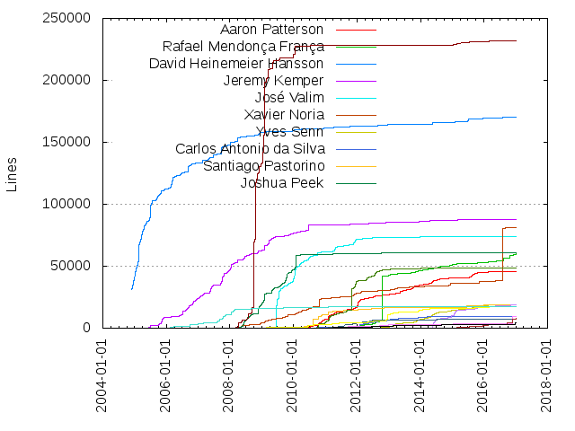
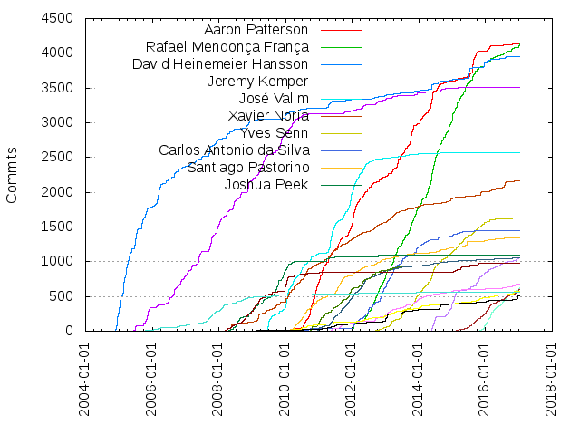

Authors
| Author | Commits (%) | + lines | - lines | First commit | Last commit | Age | Active days | # by commits |
|---|
| Aaron Patterson | 4139 (6.80%) | 45701 | 32091 | 2009-03-10 | 2016-12-22 | 2843 days, 21:20:04 | 871 | 1 |
| Rafael Mendonça França | 4133 (6.79%) | 59889 | 74353 | 2010-10-06 | 2017-01-06 | 2283 days, 19:11:51 | 1019 | 2 |
| David Heinemeier Hansson | 3954 (6.50%) | 170165 | 69701 | 2004-11-24 | 2016-12-13 | 4401 days, 18:02:44 | 834 | 3 |
| Jeremy Kemper | 3511 (5.77%) | 87457 | 64605 | 2005-06-12 | 2015-07-14 | 3684 days, 6:02:07 | 935 | 4 |
| José Valim | 2568 (4.22%) | 73643 | 80160 | 2008-05-17 | 2014-11-26 | 2384 days, 16:46:20 | 744 | 5 |
| Xavier Noria | 2165 (3.56%) | 81001 | 104985 | 2008-05-02 | 2016-12-18 | 3152 days, 1:38:36 | 871 | 6 |
| Yves Senn | 1632 (2.68%) | 18737 | 12667 | 2011-05-20 | 2016-11-22 | 2012 days, 22:00:18 | 629 | 7 |
| Carlos Antonio da Silva | 1444 (2.37%) | 9468 | 13600 | 2010-01-12 | 2016-10-24 | 2476 days, 17:21:20 | 493 | 8 |
| Santiago Pastorino | 1343 (2.21%) | 18593 | 18726 | 2010-01-17 | 2016-11-28 | 2507 days, 8:04:20 | 609 | 9 |
| Joshua Peek | 1102 (1.81%) | 61177 | 71590 | 2008-04-15 | 2015-03-13 | 2523 days, 2:20:23 | 315 | 10 |
| Sean Griffin | 1057 (1.74%) | 18977 | 11342 | 2013-03-08 | 2017-01-06 | 1400 days, 12:34:21 | 337 | 11 |
| Vijay Dev | 1051 (1.73%) | 6940 | 6888 | 2010-12-06 | 2016-12-16 | 2202 days, 21:34:14 | 416 | 12 |
| Pratik Naik | 983 (1.62%) | 231523 | 247425 | 2008-03-05 | 2016-03-04 | 2921 days, 14:03:51 | 327 | 13 |
| Jon Leighton | 945 (1.55%) | 48290 | 44357 | 2008-09-07 | 2014-02-26 | 1997 days, 8:39:23 | 283 | 14 |
| Guillermo Iguaran | 676 (1.11%) | 9284 | 5107 | 2011-05-09 | 2016-12-11 | 2043 days, 9:19:55 | 403 | 15 |
| Rafael França | 622 (1.02%) | 0 | 0 | 2015-10-24 | 2017-01-06 | 440 days, 11:35:19 | 204 | 16 |
| Kasper Timm Hansen | 606 (1.00%) | 7640 | 3581 | 2014-08-17 | 2017-01-04 | 871 days, 1:44:38 | 284 | 17 |
| Andrew White | 572 (0.94%) | 17682 | 4577 | 2008-05-29 | 2017-01-04 | 3142 days, 0:23:11 | 317 | 18 |
| Michael Koziarski | 556 (0.91%) | 17200 | 19134 | 2005-10-06 | 2013-12-02 | 2978 days, 16:57:33 | 298 | 19 |
| Akira Matsuda | 522 (0.86%) | 4383 | 4063 | 2008-09-09 | 2017-01-05 | 3040 days, 2:36:00 | 216 | 20 |
These didn't make it to the top: Piotr Sarnacki, Matthew Draper, Vipul A M, Arun Agrawal, Ryuta Kamizono, Zachary Scott, Emilio Tagua, Rick Olson, Ryan Bigg, Francesco Rodriguez, Jamis Buck, Godfrey Chan, yuuji.yaginuma, Neeraj Singh, Prathamesh Sonpatki, Jon Moss, Marcel Molina, Yehuda Katz, Robin Dupret, Mike Gunderloy, kennyj, Nicholas Seckar, Mikel Lindsaar, schneems, yui-knk, Steve Klabnik, Prem Sichanugrist, Timm, Abdelkader Boudih, wycats, Arthur Nogueira Neves, Arthur Neves, Yehuda Katz + Carl Lerche, Carl Lerche, eileencodes, Łukasz Strzałkowski, Jeremy Daer, Frederick Cheung, Sebastian Martinez, claudiob, Oscar Del Ben, Eileen M. Uchitelle, Richard Schneeman, Carlhuda, Josh Kalderimis, Sergey Nartimov, Alexey Vakhov, Akshay Vishnoi, Sam Stephenson, Guo Xiang Tan, Sven Fuchs, Bogdan Gusiev, Hongli Lai (Phusion), Vishnu Atrai, Geoff Buesing, Jaime Iniesta, Tobias Lütke, प्रथमेश Sonpatki, Rizwan Reza, Juanito Fatas, wangjohn, Mehmet Emin İNAÇ, Javan Makhmali, Leon Breedt, Gonçalo Silva, Kuldeep Aggarwal, Yasuo Honda, Jason Noble, Gaurish Sharma, Damien Mathieu, thedarkone, Vasiliy Ermolovich, Jon Atack, Genadi Samokovarov, Aditya Sanghi, Agis Anastasopoulos, Trevor Turk, Marc-Andre Lafortune, José Valim and Mikel Lindsaar, Tarmo Tänav, Raimonds Simanovskis, Cristian Bica, CassioMarques, Aditya Kapoor, Daniel Schierbeck, amitkumarsuroliya, Thomas Fuchs, Paul Nikitochkin, rick, Ronak Jangir, brainopia, Gaurav Sharma, Ben Woosley, Mikhail Dieterle, Kir Shatrov, James Miller, Zuhao Wan, Ben Orenstein, Karel Minarik, Andreas Scherer, rohit, Jorge Bejar, Joost Baaij, Claudio B., robertomiranda, miloops, Waynn Lue, Hendy Tanata, David Chelimsky, Mislav Marohnić, Lauro Caetano, Yuki Nishijima, Norman Clarke, Ernie Miller, gbuesing, Santosh Wadghule, Nick Sieger, Matt Jones, Tore Darell, Sam Ruby, Rashmi Yadav, Brian Cardarella, Jeffrey Hardy, Jeff Dean, Franck Verrot, Eloy Duran, Cheah Chu Yeow, Bob Remeika, Roque Pinel, Erik St. Martin, Claudio B, John Firebaugh, Jean Boussier, Scott Barron, Richard Hulse, Gosha Arinich, Stefan Sprenger, Mike Perham, Manfred Stienstra, Karunakar (Ruby), Andre Arko, Wojciech Wnętrzak, Tom Kadwill, Jonathan Roes, Anton Davydov, lest, Thiago Pradi, Paco Guzman, Ray Baxter, Josh Susser, Erik Michaels-Ober, Diego Carrion, Clemens Kofler, Alex Kitchens, Nick Sutterer, Matt Duncan, AvnerCohen, Thiago Pinto, Rohit Arondekar, Mauro George, eparreno, Viktar Basharymau, Uģis Ozols, Philip Arndt, JudeArasu, Hrvoje Šimić, Benjamin Quorning, aditya-kapoor, Stephen St. Martin, Rajarshi Das, Pablo Torres, Mark J. Titorenko, Lachlan Sylvester, Andrey Nering, Sam Pohlenz, Luca Guidi, Bryan Helmkamp, Brian Durand, Mohammad Typaldos, Lucas Mazza, Jay Hayes, Harshad Sabne, Brian Lopez, Anupam Choudhury, Ankit Gupta, Teng Siong Ong, Takehiro Adachi, Rafael Magana, Ken Collins, Jason Noble & Ralph Shnelvar, Dmitry Polushkin, Chris Kampmeier, Benjamin Fleischer, Angelo capilleri, Matt Jankowski, Alexey Muranov, Alexey Gaziev, mhutchin, Subba Rao Pasupuleti, Ryunosuke SATO, Michael Grosser, Marcelo Silveira, Josef Šimánek, Grey Baker, Francis Go, Tom Stuart, Stan Lo, Mark Rushakoff, Jose and Yehuda, Evan Farrar, Dmitry Vorotilin, Derek Prior, Cody Fauser, Chad Woolley, Andy Lindeman, Andrey Deryabin, Alvaro Pereyra, Yaroslav Markin, Tim Wade, Sunny Ripert, Sean Collins, Ryan Bates, Rodrigo Rosenfeld Rosas, Rajinder Yadav, Nihad Abbasov, Josiah Ivey, Joseph Pecoraro, George Ogata, Erich Menge, Angelo Capilleri, Aditya Chadha, Semyon Perepelitsa, Marcin Olichwirowicz, Lawrence Pit, Henrik N, Fred Wu, David Lee, Christos Zisopoulos, Anil Wadghule, Abhishek Jain, bogdanvlviv, Will Bryant, Tony Miller, T.J. Schuck, Steven Harman, Sammy Larbi, Mark Thomson, Josep M. Bach, Jeroen van Dijk, Jakub Kuźma, Iain Hecker, Iain Beeston, George Claghorn, Egor Homakov, Andrew Kaspick, athonlab, akihiro17, Sushruth Sivaramakrishnan, Rahul P. Chaudhari, R.T. Lechow, Pavel Pravosud, Olek Janiszewski, Nicholas Rowe, Mohit Natoo, Manuel Menezes de Sequeira, Lars Kanis, Kristian Freeman, Krekoten' Marjan, Kent Sibilev, Kassio Borges, Jonathan del Strother, Jeff Kreeftmeijer, Jay Pignata, Javier Vidal, Jan De Poorter, Greg Molnar, Florian Weber, Federico Ravasio, Eugene Gilburg, Anuj Dutta, Aleksey Magusev, Agis-, Waseem Ahmad, Tekin Suleyman, Tamir Duberstein, Ryan Davis, Peter Suschlik, Mike Moore, Michael S. Klishin, Matthew Bergman, Matt Bridges, Jo Liss, Dmitriy Kiriyenko, Dan Gebhardt, Dalibor Nasevic, Cesar Carruitero, Alex Johnson, rspeicher, heavysixer, Victor Costan, Sam, Murray Steele, Melanie Gilman, Matthew Rudy Jacobs, Juanjo Bazán, Jack Danger Canty, George Millo, Gaston Ramos, Fumiaki MATSUSHIMA, Douwe Maan, Colin Curtin, Yehuda Katz and Carl Lerche, Wincent Colaiuta, Willem van Bergen, Weston Platter, Washington Luiz, Tom Lea, Terence Lee, Stefan Penner, Sergio, Rolf Timmermans, Rishi Jain, Nikita Afanasenko, Nick, Myron Marston, Marcin Raczkowski, Jake Worth, Gabriel Horner, Florent Guilleux, Erol Fornoles, Dan Pickett, Christopher Meiklejohn, Carson McDonald, Brooks Reese, Attila Domokos, Ari Pollak, Aldo "xoen" Giambelluca, Aditya, utilum, twinturbo, hnatt, dmathieu, Yoong Kang Lim, Sergey Prikhodko, Sergey Parizhskiy, Santiago Pastorino and José Ignacio Costa, Sandip Ransing, Rodrigo Navarro, Pat Allan, Pablo Herrero, Nishant Modak, Nate Berkopec, Mike Gehard, Michael de Silva, Matthew Stopa, Mark McSpadden, Jeff Dutil, Jan Habermann, James Coleman, Hemant Kumar, Heiko Webers, Grant Hutchins, Evan Phoenix, Eugene Pimenov, Eliot Sykes, Edward Tsech, Dieter Komendera, David Celis, Cody Cutrer, Brian Christian, Ayrton De Craene, Aliaksey Kandratsenka, Alexey Markov, Alex Robbin, thoefer, karanarora, gregolsen, ganesh, ZENATI YASSINE, Tom Ward, Tima Maslyuchenko, Tim Pope, Takashi Kokubun, Sıtkı Bağdat, Szymon Nowak, Sergey Alekseev, Sam Umbach, Rory O’Kane, Rob Zolkos, Paul McMahon, Oge Nnadi, Nick Quaranto, Miguel Grazziotin, Michael Pearson, Marcelo Giorgi, Marc Schütz, Malcolm Locke, Larry Lv, Gourav Tiwari, Gabe da Silveira, Evgeniy Dolzhenko, Denis Odorcic, Dave Powers, Charlie Somerville, Charles Oliver Nutter, Brian Morearty, Avi Tzurel, Andrey Novikov, Andrey Molchanov, Andrew Ferk, Alex Tambellini, Adrien Lamothe, prasath, kares, dharmatech, TomK32, Tim Rogers, Steven Yang, Stephen Celis, Simon Jefford, Robert Pankowecki, Ranjay Krishna, Raghunadh, Paul Gallagher, Nicolas Cavigneaux, Nick Howard, Michael Lavrisha, Lee Reilly, Kulbir Saini, Kohei Suzuki, Kevin McPhillips, Kevin Deisz, Justin George, José Corcuera, Josh Peek, Jonathan Viney, John Mileham, Joel, Jeremy Walker, Jared Beck, Jan Xie, Igor Zubkov, Igor Kapkov, Hongli Lai (Phusion, Henrik Hodne, Edgars Beigarts, Doug Cole, Dharam Gollapudi, David Trasbo, David Rodríguez de Dios, David Dollar, Carl Lerche & Yehuda Katz, Bratish Goswami, Bernard Potocki, Bart de Water, Anton Kalyaev, Alexander Uvarov, Ahmed El-Daly, Adam Meehan, zhengjia, willnet, taryn, snusnu, sanemat, keepcosmos, grosser, ankit1910, adman65, Xavier Shay, Wen-Tien Chang, Tsutomu Kuroda, Tom Clarke, Steven Soroka, Steve Jorgensen, Soon Van, Simon Eskildsen, ShunsukeAida, Shia, Scott Bronson, Sandeep, Samuel Cochran, Sam Oliver, Sam Davies, Ryo Hashimoto, Ryan T. Hosford, Robert Eshleman, Phil Ross, Pablo Ifran, Noemj, Nikolay Shebanov, Nicholas E. May (on Enterprise), Mike Breen, Max Lapshin, Mark Turner, Leandro Facchinetti, Keenan Brock, Katrina Owen, Justin Coyne, João Britto, Jonathan Baudanza, Jon Rowe, Joe Van Dyk, Jim Jones, Jamison Dance, Jack Dempsey, Hugo Peixoto, Henrik Nyh, Geoffrey Roguelon, Gary S. Weaver, Francesco Rodríguez, Elliot Winkler, Edouard CHIN, Daniel Lopes, Chris Eppstein, Cezary Baginski, Carlos Souza, Carlos Galdino, Byron Bischoff, Bryan Woods, Arturo Pie, Antonio Cangiano, Anton Cherepanov, Andrés Mejía, Andreas Loupasakis, Akshay Khole, Aayush khandelwal, stopdropandrew, steve, spyhole, printercu, phoet, palkan, ojab, misfo, kenta-s, edogawaconan, Zoltan Kiss, Yukio Mizuta, Yosuke Kabuto, Vít Ondruch, Tony Ta, Todd Bealmear, Timothy N. Tsvetkov, Tim Connor, Tieg Zaharia, Tee Parham, Taishi Kasuga, Stefan Kanev, Semyon Pupkov, Sasha Gerrand, Sam Granieri, Ryan Wallace, Roman V. Babenko, Philippe Huibonhoa, Peter Wagenet, Peter Jaros, Pavel Gorbokon, Paul Gillard, Paul Battley, Nick Cox, Nathan Weizenbaum, Mike Dillon, Michiel Sikkes, Michael Schuerig, Max Shytikov, Maurizio De Santis, Matthew Robertson, Matthew M. Boedicker, MQuy, Lucas Caton, Logan Hasson, Liceth Ovalles, Lance Ivy, Konstantinos Rousis, Konstantin Shabanov, Kevin Casey, Julio Lopez, Juanjo Bazán, Juan M. Cuello, John Gesimondo, John D. Hume, Jerry D'Antonio, Jeroen van Baarsen, Jeremy Friesen, Jeff Cohen, Jatinder Singh, James Mead, James A. Rosen, Ilya Grigorik, Gordon Chan, Felix Bünemann, Fabrizio Regini, Eric Chahin, Earl J St Sauver, Dylan Thacker-Smith, Doug Barth, Dimitar Dimitrov, David Verhasselt, David Kuhta, Daniel Guettler, Daniel Dyba, Dan Erikson, Connor Shea, Colin Bartlett, Christopher Dell, Chris Hapgood, Chris Griego, Chris Arcand, Carlos Galdino + Rafael Mendonça França, Carlos Duclos, Caleb Thompson, Burke Libbey, Brad Murray, Blake Mesdag, Ben Pickles, Anshul Sharma, Anand, Amparo Luna + Guillermo Iguaran, Amit Thawait, Aman Gupta, Alexey Nayden, Alexander Balashov, Accessd, tomhuda, sandeepravi, noinkling, lvl0nax, lsylvester, logylaps, laurocaetano, joker1007, davetoxa, buddhamagnet, beerlington, abhishek, a3gis, Zoltan Debre, Yu Haidong, Winston, Vladimir Strakhov, Ugis Ozols, Uday Kadaboina, Tu Hoang, Tristan Dunn, Tony Jian, Thomas Walpole, Thomas Drake-Brockman, Thibault Jouan, Taryn East, Tara Scherner de la Fuente, Takayuki Matsubara, Steve Lounsbury, Simon Tokumine, Sen-Zhang, Sean Walbran, Seamus Abshere, Scott Stewart, Saulius Grigaliunas, Samuel E. Giddins, Rémy Coutable, Ryan Sandridge, Ryan Oblak, Ryan McGeary, Ryan Garver, Rodrigo Flores, Roberto Miranda, Robert Ross, Robby Russell, Rob Looby, Rhett Sutphin, Rafaël Blais Masson, Radan Skoric, Przemek Hocke, Pratik, Pivotal Labs, Piotr Niełacny, Philippe Creux, Paul Sadauskas, Paul Barry, Paul Annesley, Patrick Mahoney, Pan Thomakos, Oriol Gual, Olivier Lacan, Niels Ganser, Nicolás Hock Isaza, Nick Pellant, Nick Borromeo, Nathaniel Bibler, Nathan Broadbent, Nat Welch, Molchanov Andrey, Mindaugas Mozūras, Miles Georgi, Mike Naberezny, Mike Howard, Michal Papis, Michael Ryan, Michael Hutchinson, Max Melentiev, Mauricio Linhares, Matthew McEachen, Matthew Erhard, Matias Korhonen, Martin Svalin, Martin Schürrer, Marshall Huss, Marko Seppae, Mario Visic, Mariano Valles, Marcus Stollsteimer, Manoj, Luke Melia, Luke Gruber, Lukasz Sarnacki, Les Nightingill, Kevin Musiorski, Kevin Glowacz, Kazimierz Kiełkowicz, KD, Joseph Wong, Jonathan Rochkind, Jonathan Dance + Gabriel Horner, Jon McCartie, John Yani, John Trupiano, John Paul Ashenfelter, John Kelly Ferguson, John Barnette, Joe Hannon, Joe Fiorini, Joao Carlos, Jiri Pospisil, Jimmy Cuadra, Jeremy Daer (Kemper), Jeremy Baker, Jason King, Jason Dew, Jared McFarland, James Wen, James Le Cuirot, James Coglan, Ivan Evtukhovich, Ivan Antropov, Islam Wazery, Hyonjee Joo, Hirofumi Wakasugi, Harry Marr, Gustavo Beathyate, Glenn Gillen, Gert Goet, Gareth Rees, Gabriel Sobrinho, Gabi Stefanini, Franco Catena, Florian Thomas, Evan Machnic, Eugene Kenny, Erik Ostrom, Elomar França, Earl St Sauver, Drew Ulmer, Douglas Teoh, Dmytrii Nagirniak, Diego Plentz, Diego Algorta, Deepak Kannan, David Workman, David Genord II, David Elliott, David Calavera, Dave Rothlisberger, Dave Gynn, Daniel Rhodes, Daniel Luz, Daniel Dawson, Dan Olson, Dan McClain, Dallas Taylor, Coraline Ada Ehmke + Aaron Patterson, Claudio Poli, Claudi Martinez, Ciro Santilli, Christian Wesselhoeft, Chad Krsek, Brian McManus, Brian Alexander, Brandon Keepers, Bradford Folkens, Bernardo de Pádua, Ben Lewis, Avner Cohen, Andrey Samsonov, Andrew Radev, Alejandro Andrés, Alberto Perdomo, Alan Harper, Akshay, Afshin Mokhtari, Adam Roben, Aaron Suggs, Aaron Pfeifer, Aaron Ang, AJ Acevedo, virusman, vijay, unknown, tumayun, tomykaira, thenickcox, ta1kt0me, slainer68, rochefort, rizwanreza, raggi, paulccarey, nanaya, namusyaka, moro, mjy, mica eked, maximerety, masarakki, madlep, lifo, kp, knapo, kei, kaygee, josevalim, henning mueller, dtaniwaki, deeeki, chrisfinne, burningTyger, bUg, ayaya, arvida, artemave, angelo giovanni capilleri, adam, Zamith, Zachary Porter, Yuji Yaginuma, Yasyf Mohamedali, Will Jessop, Will, Vinny Diehl, Tyler Hunt, Trent Ogren, Travis Jeffery, Toshi MARUYAMA, Tomohiko Himura, Tom Prats, Tom Copeland, Tobias Bielohlawek, Tim Raymond, Tim Harper, Tim Haines, Thomas von Deyen, Thomas Osborn, Thiago Augusto, Thiago Almeida, Thais Camilo, Teo Ljungberg, Tawan Sierek, Tatsuro Baba, Tanmay Sinha, Tadas Tamošauskas, Tadas Tamosauskas, Suraj N. Kurapati, Steven Anderson, Steve Richert, Steve Purcell, Steve Klabnik + Katrina Owen, Steve Agalloco, Stephen Blackstone, Stefan Kaes, Sourav Moitra, Siva Gollapalli, Seth Fitzsimmons, Sergio Gil Pérez de la Manga, Seiei Miyagi, Sebi Burkhard, Scott Taylor, Scott González, Satoshi Ohmori, Samuel Kadolph, Sachin87, SHIBATA Hiroshi, Ryunosuke Sato, Ryan Manuel, Ruy Asan, Roy Tomeij, RomD, Robin Clowers, Roberto Soares, Robert Pankowecki (Gavdi), Robb Kidd, Rob Anderton, Richard Millan, Rich Cavanaugh, Renato Mascarenhas, Raul Murciano, Ralin Chimev, Rafael Sales, Rafael Mendonça França + Kassio Borges, RSL, Prakash Laxkar, Piotr Jakubowski, Phil Smith, Paul Mucur, Paul Morganthall, Paul Grayson, Patrick Robertson, PareshGupta, Panayotis Matsinopoulos, Olli Jokinen, Oliver Jakubiec, Noah Hendrix, Nikolay Kondratyev, Nick Reed, Nick Plante, Nicholas Schultz-Møller, Nate Smith, Mohamad Abras, Miklos Fazkeas, Mikko Johansson, Michał Łomnicki, Michael Lovitt, Michael D.W. Prendergast, Mattias Pfeiffer, Matthew Daubert, Matt Stopa, Matt Aimonetti, Mateusz Konieczny, Mark Hayes, Mark, Marek, Manuel Meurer, Mack Earnhardt, Mac Martine, Luke Steensen, Lourens Naude, Lloyd Pick, Levin Alexander, Leonard Garvey, Lennart Fridén, Leigh Caplan, Lars Smit, Kyle Heironimus, Koichi ITO, Kirill Nikitin, Kieran Pilkington, Kevin Skoglund, Kevin Moore, Ken Mazaika, Kelley Reynolds, Justin Campbell, Junya Ogura, Joshua Cody, Josh Sharpe, Josh Justice, Josh, Jonathon D. Jones, Jonas Baumann, John Meehan, John Hawthorn, John Foley, Johannes Opper, Joey Butler, Joel Chippindale, Joe Rafaniello, Jesse Storimer, Jeremy McAnally, Jeremy Evans, Jens Bissinger, Jefferson Lai, Jason Weathered, Jarmo Isotalo, Jared Nipper, Jared Armstrong, Janko Marohnić, Jan Szumiec, Jan Berdajs, Jan, Jacek Becela, Ilya Vorontsov, Ignatius Reza, Ian White, Ian Ker-Seymer, Ian C. Anderson, Hiro Asari, Henrik Nygren, HPNeo, Greg Campbell, Grant Hutchins & Peter Jaros, Grant Hollingworth, Girish S, Gilad Zohari, Geoff Garside, Ganesh Kumar, Filipe Moreira, Esad Hajdarevic, Eric Guo, Eric Chapweske, Eric Carty-Fickes, Edo Balvers, Dylan Smith, Dov Murik, Don Wilson, Dhia Eddine Chouchane, David N. Welton, David Cornu, Daniel Rodríguez Troitiño, Daniel Azuma, Dan Croak, DAVID MOORE, Corey Ward, Colin Burn-Murdoch, Chun-wei Kuo, Christine Yen, Chris McGrath, Chris Kimpton, Chris Cherry, Chashmeet Singh, Chase DuBois, Chandresh Pant, Chad Jolly, Cédric FABIANSKI, Carol Nichols, Calvin Tam, Bruno Michel, Brock Trappitt, Brian Thomas Storti, Brian Rose, Brendon Murphy, Brandon Tilley, Bouke van der Bijl, Bogdan, Bobby Wilson, Bernerd Schaefer, Benny Klotz, Ben Toews, Ben Marini, Arthur Zapparoli, Arkadiusz Holko, Arkadiusz Fal, Anubhav Saxena, Andy Jeffries, Andriy Tyurnikov, Andrey Voronkov, Andrey Chernih, Andrey A.I. Sitnik, Andrew Vit, Andrew Olson, Andrew Nesbitt, Andrew Mutz, Andrew France, Andrew Davis, Amparo Luna, Amos King, Alexander, Alex Rothenberg, Akira Matsuda + Koichi Sasada, Adrien Coquio, Adam Milligan, Adam, Abd ar-Rahman Hamidi, Aaron Batalion, タコ焼き仮面, Étienne Barrié, zires, yury, yalab, yachibit, xyctka@gmail.com, wmoxam, wendi, tsukasaoishi, tbpgr, tashian, tanmay3011, tank-bohr, suginoy, suchasurge, sowjanya, siong1987, simply-phi, shunsukeaida, shingo.nakanishi, sgerrand, sealocal, sdsykes, rsl, rpq, rono23, rbr, ravindra kumar kumawat, railsbob, r11runner, r-stu31, pyromaniac, pleax, pivotal, peeyush, pbflinn, ozzyaaron, ota42y, oss92, oleg dashevskii, nosolopau, nerdinand, mrageh, mo khan, manishval, maclover7, lulalala, lambda_, kayvan, karmi, kamal namdeo, juan david pastas, jlxw, jbranchaud, jamesprior, jacortinas, iwiznia, igor04, homa, hiren mistry, hemali jain, gmarik, geemus, ejy, dreamfall, dm1try, deepj, corwinkelly, coreyhaines, constXife, cnaize, clst, ciastek, capps, blahedo, ben, awilliams, atul-shimpi, artemk, arktisklada, ara.t.howard, ankit8898, anilmaurya, adamliesko, Zhang Kai Yu, Zack Hobson, Zach Inglis, Zach Alewel, Yuri Kasperovich, Yoshioka Tsuneo, Yoni Yalovitsky, Yamagishi Kazutoshi, William Lawson, William Johnston, Will Gray, Waitaya Krongapiradee, Vsevolod Romashov, Volmer, Vladimir Rybas, Vladimir Dobriakov, Vishnu Ks, Vinicius Quaiato, Vasily Polovnyov, Vajrasky Kok, Utkarsh Kukreti, Umar Sheikh, Ulysse Carion, Uddhava, Trung Lê, Troy Kruthoff, Trotter Cashion, Tristan Gamilis, Travis Yoder, Toshimaru, Torsten Braun, Tomer Brisker, Tomas Varaneckas, Tom Meier, Tinco Andringa, Timo Schilling, Tim Petricola, Tim Morgan, Tim McEwan, Tim Cooper, Tim, Tiago Macedo, Thomas R. Koll, Thomas Balthazar, Thibaut Courouble, Tekin, Tejas Dinkar, Teflon Ted, Tatsuhiko Miyagawa, Sławosz Sławiński, Sven Kräuter, Sukeerthi Adiga G, Sugino Yasuhiro, Stevie Graham, Steven Spiel, Steven Nunez, Steve St. Martin, Stephen Touset, Stephen Bannasch, Stefan Rohlfing, Slobodan Kovacevic, Simone Carletti, Simon Woker, Simon Hengel, Simon Baird, Siddharth Bhatore, Shuhei Kagawa, Shimpei Makimoto, Shigeya Suzuki, Shay Davidson, Shane Hender, Severin Schoepke, Sergio Gil, Sergio Arbeo, Sergey Novikov, Sergey Kojin, Sebastian Sogamoso, Sebastian Gassner, Sebastian A. Espindola, Seb Jacobs, Sean Linsley, Sean Kirby, Sean Bryant, Scott Willson, Scott W. Bradley, Scott Ringwelski, Scott Johnson, Satoshi Ebisawa, Sarah A, Santiago Pastorino and Sebastian Martinez, Santiago Pastorino and Carl Lerche, Samer Masry, Sameer Rahmani, Sam Phippen, Sam Elliott and Santiago Pastorino, Sam Elliott, Sam Aarons, Saimon Moore, Sadjow Leão, S. Brent Faulkner, Ryoji Yoshioka, Ryan Williams, Ryan Selk, Ryan Fitzgerald, Ryan Duryea, Ryan De Villa, Ryan Dao, Ryan Buckley, Ruben Fonseca, Roman Shterenzon, Roman Shmatov, Rolf Bjaanes, Rohan Daxini, Rodrigo Pavano, Rodrigo Martins, Rodrigo Kochenburger, Robin Tweedie, Robin Roestenburg, Robin Böning, RobertZK, Robert Glaser, Robert Evans, Rob Sharp, Rob, Riley Lynch, Richard Owen, Richard Littauer, Rich Sturim, Rich Healey, Rex Feng, René van den Berg, Remo Mueller, Reg Braithwaite, Recursive Madman, Rebecca Skinner, Ravinder Singh, Rasmus Kjellberg, Rasik Pandey, Rajeev N Bharshetty, Rajat Bansal, RainerBlessing, Rahul Chaudhari, Rafael Chacón, Radu Busuioc, RAHUL CHAUDHARI, Qihuan Piao, Prayag Verma, Prashant Sahni, Pramod Sharma, Prakash Murthy, Pirogov Evgenij, Piotr Chmolowski, Philipp Kempgen (Amooma), Philipp Franke, Philipe Fatio, Philip Nguyen, Philip Hallstrom, Peter Vandenabeele, Peter Schröder, Peter Marklund, Peter Boling, Pete Higgins, Pete Deffendol, Pete Campbell, Pepe Hipolito, Peer Allan, Pedro Nascimento, Pedro Fayolle, Paweł Kondzior, Pawel Pierzchala, Pawel Janiak, Pavel Penkov, Paulo Ancheta, PaulL1, Paul Yoder, Paul Rosania, Paul Kehrer, Paul Hieromnimon, Patrick Sharp, Patrick Helm, Patrick Davey, Pat Nakajima, Pascal Ehlert, Parker Selbert, Pan GaoYong, Overbryd, Oleg Sukhodolsky, Ofer Nave, Oemuer Oezkir, OZAWA Sakuro, Nolan Evans, Noé Froidevaux, Noel Gomez, Nobuyoshi Nakada, Nik Wakelin, Nicolas Sanguinetti, Nicolas Despres, Nick Rowe, Nick Rogers, Nicholas Jakobsen, Nathaniel Talbott, Nathaniel Madura, Nathan Long, Nat Budin, Mr. Wolfe, Mohammad El-Abid, Mohamed Wael Khobalatte, Mitesh Jain, Mitch Crowe, Mingdong Luo, Miles Egan, Miklos Fazekas, Mikhail Vaysman, Mike Virata-Stone, Mike Munroe, Mike Mulvaney, Mike Mangino, Mike Gaffney, Miguel Herranz, Michel Grootjans, Michael Siebert, Michael Raidel, Michael Hoy, Michael Hartl, Michael Groeneman, Michael Ebens, Michael Dawson, Melody, Mehdi Lahmam, Meck, Maxime RETY, Max Katz, Matthias Zirnstein, Matthew Wear, Matthew Nicholas Bradley, Matthew Conway, Matt Jones + Scott Walker, Matt Burke, Matt Buck, Matias Flores, Mathias Biilmann Christensen, Mat Brown, Martin Schürrer, Martin Eisenhardt, Markov Alexey, Mark Reginald James, Mark Dodwell, Marius Nuennerich, Marian Rudzynski, Marcos Tapajos, Marcelo Casiraghi, Marcel Morgan, Marc G Gauthier, Marc Chung, Marc Bowes, Marat Kazbekov, Manu J, Manu, Manish Puri, Mani Tadayon, Maarten Claes, MSP-Greg, Léo Hackin, Lukasz Strzalkowski, Luka Marčetić, Luis Hurtado, Lucia Escanellas, Lucas Stephanou, Louis-Michel Couture, Lihan Li, Li Ellis Gallardo, Leslie Viljoen, Leo Gallucci, Laura Paredes, Kyle Hargraves, Kunal Shah, Kristopher Murata, Kris Selden, Kostiantyn Kahanskyi, Kornelius Kalnbach, Konstantin Haase, Koen Punt, Kirill Lashuk, Kir, KingsleyKelly, Kevin Hughes, Kentaro Kuribayashi, Kenta Okamoto, Kenichi Kamiya, Ken Ip, Katie Oldaker, Karthik Muthupalaniappan, Kang-Kyu Lee, Kamil Śliwak, Kamal Fariz Mahyuddin, Kalman Hazins, KalabiYau, Justin S. Leitgeb, Justin Mazzi, Justin Leitgeb, Julian Nadeau, JudeAr, Juanjo Bazan, JuanitoFatas, Joshua Wehner, Joshua Nichols, Joshua French, Joshua Ballanco, Josh Nesbitt, Josh Jordan, José Mota, Joseph Zidell, Josef Stribny, Josef Reidinger, Jose Fernandez, Jose Añasco, Jordi Romero, Jordan Owens, Jonathan Powers, Jonathan Mazin, Jonathan Lozinski, Jonathan Lim, Jonathan Garvin, Jonathan Cutrell, Jonathan, Jon Pascoe, Jon Jensen, Johnny Holton, John Riviello, John Gallagher, John F. Douthat, John Duff, John Devine, Johan Sørensen, Johan Sörensen, Johan Andersson, Joel Cogen, Jimmy Petersen, Jim Herzberg, Jian Weihang, Jey Balachandran, Jerry Cheung, Jeroen Visser, Jeroen Jacobs, Jeremy Wadsack, Jeremy Cole, Jens Wille, Jens Lukowski, Jeff Shantz, Jeff Lawson, Jeff Dickey, Jean-Francois Turcot, Jay Shepherd, Javier Cuevas, Jason Voegele, Jason Rudolph, Jason Nochlin, Jason Meller, Jason Fox, Jason Cheow, Jason Ayre, Jason, Jashank Jeremy, Jari Jokinen, Jared Giles, Jared Fine, Jan Bernacki, Jamie Gaskins, James Tucker, James Strocel, James Harton, James Golick, James Doyley, James Dean Shepherd, James Cox, Jakub Suder, Jaime Bellmyer, Jade Tucker, Jacques Crocker, Jacob Poulsgaard Tjoernholm, Jacob Evan Shreve, J. Pablo Fernández, Ivan Tse, Ivan Torres, Isaac Seymour, Ionatan Wiznia, Indrek Juhkam, Ilya Zayats, Ian Young, Ian Fleeton, Hubert Łępicki, Hitendra Singh, Hiroshige Umino, Hincu Petru, Henare Degan, Hayley Anderson, Harry V. Kiselev, Hannah Briggs, Gustavo Villa, Gustavo Delfino, Guillermo Álvarez, Grzegorz Witek, Gregg Pollack, Greg Sterndale, Grayson Wright, Grant McLean, Grace Liu, Geoff Petrie & Sean Griffin, Gareth du Plooy, Gagan Awhad, Gabe Kopley, Franky W, Francesc Esplugas, Florent Piteau, Fernando Tapia Rico, Faruk AYDIN, Fabien Jakimowicz, Ezekiel Smithburg, Evgeny Li, Evan Prothro, Evan Light, Ethan, Erik Peterson, Erik Behrends, Erich Kist, Erica Kwan, Eric Zhang, Eric Turner, Eric Hankins, Eric Allam, Emmanuel Oga, Emin Hasanov, Elia Schito, Elben Shira, Egor Lynko, Edward Anderson, Eadz, Dwayne Litzenberger, Drew Dara-Abrams, Dr Nic Williams, Doug Yun, Donald Parish, Dominic Cleal, Dmitry Ratnikov, Dmitrii Golub, Diogo Mafra, Dimko, Dimitri Krassovski, Dimitri De Frenne, Deshi Xiao, Derek Willis, Derek Kraan, Derek Hammer, Deepak Prasanna, David Rodríguez, David Paschich, David Padilla, David Lowenfels, David Jones, David Fernandez, David Czarnecki, David Chen, David, Dave Jachimiak, Darío Hereñú, Darragh Curran, Daniel Morrison, Daniel Morris, Daniel Levenson, Daniel Gomez de Souza, Daniel Fox, Dana Jones, Dan Seaver, Dan Patrick, Dan Neumann, Dan Kang, Dan Barry, Damian Janowski, Dallas Reedy, Cyril Mougel, Curtis Hawthorne, Curtis Cablegram, Cristian Planas, Cristi Balan, Craig Sheen, Craig R Webster, Craig Davey, Cory Gwin, Corin Langosch, Collin Miller, Colin Law, Colin Kelley, Colby Swandale, Chulki Lee, Chuck Callebs, Christopher Wade, Christopher Scott Hernandez, Christoph, Christine Hertzel, Christian Bäuerlein, Chris Sinjakli, Chris O'Sullivan, Chris Kowalik, Chris Kalafarski, Chris Hanks, Chris Feist, Chris Constantine, Chirag Aggarwal, Chiel Wester, Charles Nutter, Charles DuBose, Charles Brian Quinn, Chad Fowler, Casebook Developer, Carsten Zimmermann, Carlos Paramio, Carlos Kozuszko, Caleb Wright, Cakey | Buddy Magsipoc, Caius Durling, Caio Chassot, Cade Truitt, Bryan Ricker, Bruno Sutic, Bruce Park, Bruce Krysiak, Brian Quinn, Brian Littmann, Brian John, Brian Fontenot, Brian Davis, Brian D. Burns, Brennan Dunn, Brendan Ribera, Brandon Hilkert, Bradly Feeley, Bradley Harris, Bradley Buda, Brad Ediger, Brad Dunbar, Boris Staal, Blake Smith, Bhavin Kamani, Benjamin Manns, Benedikt Deicke, Ben McRedmond, Bas van IJzendoorn, Bartlomiej Kozal, Azzurrio, Ayose, Aviv Ben-Yosef, Austin Putman, Antonio Tapiador del Dujo, Antonio Santos, Anton Lindqvist, Anton Chuchkalov, Anton, AnnaErshova, Ankit gupta, Andrii Ponomarov, Andriel Nuernberg, Andrey Vakarev, Andrey Ognevsky, Andrey Koleshko, Andrew Timberlake, Andrew Hendrie, Andreas Neuhaus, Andreas Maierhofer, Andreas Lietz, Andrea Campi, Anatoly Makarevich, Anatoli Makarevich, Amr Tamimi, Alvaro Bautista, Almudena Garcia, Alexey Mahotkin, Alexey, Alex Yakoubian, Alex Soulim, Alex Peattie, Alex Handley, Aleksey Gureiev, Aleksandr Koss, Alan Kennedy, Ahmad Al-kheat, Adrian Mugnolo, Adam Stankiewicz, Adam Prescott, Adam Keys, Adam Haymond, Adam Gamble, Achilleas Pipinellis, Ace Suares, Aaron Stone, Aaron Renner, Aaron Quint, Aaron Lasseigne, Aaron Cruz, 1334, 簡煒航 (Jian Weihang), 簡煒航, 白井 健太, 松田 明, प्रथमेश, Дмитро Будник, Łukasz Adamczak, zhouguangming, zackham, zacharywelch, yunlei, yuktikhurana, yuki3738, wynksaiddestroy, wvengen, wingfire, windock, watsonian, wallerjake, vs4vijay, viditn91, vertigoclinic, vanderhoop, vadivelan, v.promzelev, utenmiki, travis.h.oneill@gmail.com, trans, tnp, tinogomes, thiagoaugusto, the-undefined, tanraya, takkanm, takiy33, syhebel, swapdisc, sukolsak, sukesan1984, sue445, stlruby@googlegroups.com, sthollmann, starbelly, sshaw, sonnym, sjain1107, siddharth@vinsol.com, shtirlic, shruti2791, shock_one, shingo-nakanishi, shiksha, shik, sh6khan, sgrif, seunghwan oh, seapy, scottwillson, scaryguy, sblackstone, rxing, rusikf, rpheath, root, rockrep, rmarone, reu, retr0h, regonn, raq929, rails-noob, pseidemann, prakashmurthy, prakash, prajakta, postmodern, pocke, pinglamb, phinze, pfagiani, peter, pawel2105, pavlos, paranoiase Kang, ov3y, orta, orangea, ogeidix, ogawaso, oesgalha, oamblet, noam, nishant-cyro, neumayr, needfeed, nate, nakadai, nachocab, mynyml, monmon, mogetutu, mntj, mmmpa, mlbileschi, michaelminter, michaeljayt, mfoster, melissawahnish, meganemura, mdaisuke, mazuhl, mattbauer, mathieuravaux, markevich, mark, mariozig, manish-shrivastava, mabras, ma2gedev, lukeludwig, luke, libin, lholden, lethalbrains, leriksen, leprasmurf, lazylester, laserlemon, lakshan, l4u, kyatul, kuldeepaggarwal, kucaahbe, kuahyeow, korbin, kommissar, kitallis, kishore-mohan, kirill, kevcha, kentendo, kei-s, kasper, karevn, kane, kal, kakipo, jzw, jweiss, jwarwick, jvoorhis, juggernaut-, juandebravo, jpd800, jordanstaub, jonnii, jonathan schatz, johndouthat, joeellis, jnoortheen, jgls, jeroeningen, jeran, jejacks0n, jeem, jbsmith86, jbbarth, jastix, jamie, jafrog, jacott, jacobstr, itzki, iangilfillan, ian, iaddict, huskins, hughkelsey, hollowspace, hoffm, hiroshi, hirocaster, heruku, hardi, hardbap, hakanensari, gsphanikumar, grentis, go2null, gnagno, gmile, glorieux, german, genlinux, fillman, fastred, erik, emre-basala, ecoologic, dvsuresh, dpmehta02, douglascalhoun, docunext, doabit, dkaplan88, djunzu, dilpreet92, diego, dickeyxxx, diatmpravin, dfens, devlin zed, dev, denisovlev, ddemaree, dcurtis, daniely, danielmbarlow, danielc192, dalton, daisuko, comptrol, colleenmcguckin, codesnik, codebrulee, codeape, clay shentrup, claudiofullscreen, chuckdishmon, chrismcc, chriskohlbrenner, chrisk, chris finne, choonkeat, chocoby, chen7897499, chaitanyav, ch33hau, cczona, cam song, calavera, bryan, brianp, brchristian, bradrobertson, bparanj, bondarev, bodhi, bobbus, bigtone1284, betesh, benolee, benmmurphy, benedikt, bastilian, barelyknown, bagwanpankaj, backspace, azul, asmega, ask, arvind, arton, ariabov, anupom syam, anuj dutta, antoine.lizee, andrey.nering@gmail.com, andrea longhi, alpaca-tc, alfa-jpn, alexbel, agius, acapilleri, abonec, aarongray, _tiii, Zolzaya, Zev Blut, Zack Perdue, Zack Hubert, Zachary Zolton, Zachary Smith, Zach Ohlgren, Zach Dennis, Zach Brock, Zach Aysan, Zach Ahn, Zach, Zac, Yves Siegrist, Yuval Kordov, Yuutetu, Yusuke Nakamura, Yury Velikanau, Yury Otcheski, Yury Kotlyarov, Yury Korolev, Yuri Smirnov, Yuri Artemev, Yuichiro Suzuki, Yosuke, Yohei YASUKAWA, Ying Tsen Hong, Yevhene Shemet, Yaw Boakye, Yasuhiko Katoh (y@su), Yasuharu Ozaki, Yannick Schutz, YanhaoYang, Yang Bo, Yamaguchi.Tomoki, Yamada Masaki, Xu Pan, Xinjiang Lu, Xenda, Xavier Defrang, Wouter van Lelyveld, Wolfram Arnold, Wolfgang Teuber, Wojtek Kruszewski, Wojciech Mach, William Myers, Will St. Clair + Neeraj Singh, Will Read, Will Jordan, Will Fisher, Will Farrington, Wijnand Wiersma, Wiehann, Wes Oldenbeuving, Wes Morgan, Wayne E. Seguin, WAKASUGI 5T111111, W. Andrew Loe III, Vokhmin Alexey V, Vlado Cingel, Vladimir Yarotsky, Vladimir Meremyanin, Vladimir Lyzo, Vladimir Krylov, Vladimir Kochnev, Vladimir Kiselev, Vladimir Andrijevik, Vlad Jebelev, Vlad Bokov, Víctor Martínez, Vitor Baptista, Vitor Balocco, Vitaly Tatarintsev, Vitalii Khustochka, Vishnu K. Sharma, Vishal Lal, Vinicius Baggio, Vincent Woo, Vince Puzzella, Vince Francesi, Ville Lautanala, Vijay Ubuntu, Vijay Kumar Agrawal, Victor Felder, Vicente Mundim, Vesa Vänskä, Vasiliy Ermolovich + Sergey Nartimov, Valentine Valyaeff, Val Kotlarov Hoffman, Vadim Golub, Uriel Katz, Ulisses Almeida + Kassio Borges, Ulisses Almeida, Ulises Cabanillas, Ujjwal Thaakar, Ubuntu, Ubiratan Pires Alberton, U-ESCAPEE\Mack, Tys von Gaza, Tyler Rick, Tyler Coville, Tyler Brock, Tute Costa, Tushar Maroo, Tsukuru Tanimichi, Trung Lê, Trung Duc Tran, Tristan Harward, Trey Bean, Trevor Wennblom, Trent Michaels, Trek Glowacki, Travis Warlick, Travis Pew, Travis Grathwell, Travis Briggs, Toshiyuki Kawanishi, Tony Wooster, Tony Schneider, Tony Primerano, Tony Pitale, Tony Novak, Tony Coconate, Tony Arcieri, Tomohito Ozaki, Tommaso Visconti, Tomasz Zurkowski, Tomasz Stachewicz, Tomas D'Stefano, Tom von Schwerdtner, Todd Lynam, Toby Woller, Toby Sims, Toby Matejovsky, Tobias Svensson, Tobias Schlottke, Tobias Pfeiffer, Tobias Bühlmann, Tobi Lehman, Timur Alperovich, Timothy Aveni, Tim Vandecasteele, Tim Sjoberg, Tim Sandberg, Tim Ruffles, Tim Riley, Tim Reischmann, Tim Peters, Tim Macfarlane, Tim Lucas, Tim Lowrimore, Tim Linquist, Tim Liner, Tim Krajcar, Tim Harvey, Tim Gildea, Tim Fenney, Tim Chater, Tim Carey-Smith, Tim Breitkreutz, Tim "Roger" Harvey, Tijmen Brommet, Thorsten Ball, Thomas McDonald, Thomas Klemm, Thomas Hollstegge, Thomas Hart II, Thomas E. Glasgow, Thilo Utke, Thijs de Vries, Thibaud Guillaume-Gentil, TheMonster, Thales Oliveira, Terry Meacham, Terence Sun, Teo Hui Ming, Ted Toer, Ted O'Meara, Ted Johansson, Taylor Mingos, Tatsuya Sato, Tatiana Soukiassian, Tate Johnson, Tarsoly András, Tapajós, Tan Le, Tammer Saleh, Takumi IINO, Takeshi AKIMA, Takatoshi Ono, Tair Assimov, TAKAHASHI Kazuaki, Szymon Madeja, Szetobo, Sytse Sijbrandij, Syamil MJ, Swanand Pagnis, Swaathi K, Sven Winkler, Sven Pachnit, Sven Kraeuter | 5v3n, Sven Bohm, Sunny, Sukeerthi Adiga, Sudara, SubbaRao Pasupuleti, Su Zhang (張甦), Strech (Sergey Fedorov), Stijn Mathysen, Stian Grytøyr, Steven Hancock, Steven Fenigstein, Steven Davidovitz, Steve Schwartz, Steve Rice, Steve Mitchell, Steve Hodgkiss, Steve Faulkner, Steve Bourne, Steve Abatangle, Steve, Stephen Puiszis, Stephen Pike, Stephen J. Butler, Stephen Celis & Xavier Noria, Stephen Bussey, Stephen Becker IV, Stephen Anderson, Stephan Hagemann, Stefan Wrobel, Stefan Rusterholz, Stefan Huber, Stefan Henzen, Stefan Daschek, Stefan Budeanu, Staphany Park, Stanko Alexander, Stanislav, Sruli Rapps, Srikanth Shreenivas, Spencer Rogers, Sparky, Soutaro Matsumoto, Sokolov Yura, Snowmanzzz(Zhengzhong Zhao), Slava Kravchenko, Skye Shaw, Sjoerd Andringa, Sina Siadat, Simon Stemplinger, Simon H, Simon Effenberg, Simon Coffey, Simo Niemelä, Simeon Simeonov, Siim Liiser, Sidu Ponnappa, Siddharth Bhagwan, Shunsuke Osa, Shunsuke Aida, Shugo Maeda, Shota Iguchi, Shota Fukumori (sora_h), Shivani, Shintaro Kojima, Shinichi Maeshima, Sherwin Wu, Shawn Veader, Shawn Drost, Shardul Parab, Shane Hanna, Shalva Usubov, Shaliko Usubov, Shakib Hossain, Seva Orlov, Seth Faxon, Serj L, Serguei Filimonov, Sergio Romano, Sergio Cambra, Sergii Boiko, Sergey Toy, Sergey Pchelincev, Sergey Nartimov + José Valim, Sergey Kuznetsov, Senthil A, Semenyuk Dmitriy, Semenyk Dmitriy, Selem Delul, Sebastian Staudt, Sebastian McKenzie, Sebastian Korfmann, Sean Schofield, Sean Scally, Sean Ouimet, Sean McCann, Sean Huber, Sean Griffin & Sean Doyle, Sean Dague, Scott Woods, Scott Walkinshaw, Scott Parkerson, Scott Nelson, Scott M, Scott Latham, Scott Hill, Scott Fleckenstein, Scott Antipa, Schnittchen, Schneems, Sava Chankov, Satoru Yamasaki, Santiago Pastorino and Emilio Tagua, Sandeep Navghane, Samus_, Samuel Williams, Samuel Lebeau, Samuel Elliott, Sam Sweeney, Sam Saffron, Sam Goldstein, Sam Elliott and Ryan Bigg, Sam DeCesare, Sam Auciello, Salman Afzal Siddiqui, Sahil Lavingia, Sagar Junnarkar, SUGINO Yasuhiro, SA, S. Christoffer Eliesen, Rystraum Gamonez, Ryan Warnick, Ryan Walker, Ryan Tomayko, Ryan Nielson, Ryan Naughton, Ryan Mohr, Ryan McCuaig, Ryan L. Cross, Ryan Kinderman, Ryan Glover, Ryan Endacott, Ryan Castillo, Ryan Bigg and Xavier Noria, Ryan Angilly, Rusty Geldmacher, Russ Smith, Ruben Davila, Ruafozy, Roy Nicholson, Ross Kaffenburger and Bryan Helmkamp, Ronnie Miller, Roman Shatsov, Roman Pushkin, Roman Pramberger, Roman Kushnir, Roman Kofman, Romain Tribes, Romain Goyet, Rohit Paul Kuruvilla, Rodrigo Dominguez, Roderick van Domburg, Rocky Jaiswal, Robson Marques, Robin Neumann, Robin Mehner, Roberto Zanon, Roberto Vasquez Angel, Robert Whitney, Robert Nesius, Robert Massaioli, Robert Krzyzanowski, Robby Grossman, Robby Colvin, Robb Shecter, Rob Zolkos & Xavier Noria, Rob Worley, Rob Sanheim, Rob Olson, Rob Gilson, Rob Christie, Rob Biedenharn, Rncrtr, Ripta Pasay, Rinaldi Fonseca, Rick Xing, Rick Moynihan, Rick Martinez, Richard Wilson, Richard Venneman, Richard Ramsden, Richard Monette, Richard Manyanza, Richard Livsey, Richard Huang, Richard Hart, Rich Manalang, Rich Bradley, Ricardo de Cillo, Ricardo Santos, Ray Zane, Ravil Bayramgalin, Raphomet, Ramon Soares, Raman Sinha, Rajesh Thummalapally, Raimo Tuisku, Rafael Valverde, Rafael Reggiani Manzo, Rafael Fidelis, Rafa García, Radoslav Stankov, Rachel Warbelow, RKushnir, R4K3, Priit Tamboom, Prem Sichanugrist, Brian Morearty, John Reitano, Prem Sichanugrist and Chris Toomey, Prem Sichanugrist & Xavier Noria, Prashant P. Shah, Prasath Venkatraman, Pranas Kiziela, Pramod, Potapov Sergey, Ponomarev Nikolay, Pol Llovet, PoTe, Pivotal Casebook, Pivotal Labs, Piotrek Okoński, Piotr Szotkowski, PikachuEXE, Pierre Schambacher, Pierre, Pier-Olivier Thibault, Phill Baker, Philipp Weißensteiner, Philipp Weissensteiner, Philipp Kempgen, Philipp Fehre, Philip Roberts, Philip R. Dutton, Philip Dorrell, Phil Nash, Phil Darnowsky, Phil Calvin, Peter West, Peter Szinek, Peter Schrammel, Peter Schilling, Peter Rhoades, Peter Mitchell, Peter Marsh, Peter Markou, Peter Kovacs, Peter Jones, Peter Cooper, Peter Baker, Peter Aronoff, Perry Smith, Pelle Braendgaard, Pedro Padron, Pedro Adame Vergara, Paweł Gościcki, Pavel Nikitin, Pavel Golubeff, Pavel Gabriel, Pavel Forkert, Pavel Evstigneev, Pavel, Pavan Kumar Sunkara, Paulo Schneider, Paulo Luis Franchini Casaretto, Paul Odeon, Paul Montero, Paul Kögel, Paul Horsfall, Paul Clegg, Paul Campbell, Paul B, Paul A Jungwirth, Paul, Patrik Stenmark, Patrick Reagan, Patrick Quinn, Patrick Perey, Patrick Joyce, Patrick Copeland, Patricio Mac Adden, Pat George, Pascal Lindelauf, Pascal Friederich, Parth Bharadiya, Paritosh Piplewar, Paolo "Nusco" Perrotta, PaoMar, Pablo Vizcay, Pablo Olmos de Aguilera Corradini, Pablo Ifrán, Pablo Cantero, Owen Davies, Oshoma Momoh, Oriol Gual and Josep M. Bach, Orhan Toy, Omar Ismail, Olly Legg, Olli Huotari, Oliver Legg, Oleg Motenko, Oleg, Obie Fernandez, Nuri Hodges, Nupur Jain, Novikov Andrey, NorimasaAndo, Norbert Crombach, Nobuhiro IMAI, Noam Gagliardi, Noah Lindner, Nithin Bekal, Niko Kiuru, Niklas Holmgren, Nikita Pomyashchiy, Nikita Fedyashev, Nikita Beloglazov, Nikhil Thombare, Nigel Ramsay, Nicolas Maloeuvre, Nicolas Hock Isaza, Nicolai Reuschling, Nico, Nick Veys, Nick Sinenko, Nick Ragaz, Nick Novitski, Nick Muerdter, Nick Meehan, Nick Malcolm, Nick Laiacona, Nicholas Yianilos, Nicholas Mulder, Nicholas Firth-McCoy, Nicholas Dainty, Nicholas Bruning, Nic Benders, Niall Burkley, Netto Farah, Nestor Ovroy, Nerian, Neodelf, Neil Stockbridge, Neil Middleton, Neil Matatall, NehaGautam, Neeraj Singh and Santiago Pastorino, Neeraj Singh and John Leighton, Neer Friedman, Ned Ruggeri, Nathaniel Jones, Nathan de Vries, Nathan Zook and Ryan Bigg, Nathan Youngman, Nathan Witmer, Nathan Wenneker, Nathan Stitt, Nathan Lloyd Smith, Nathan Lee, Nate Wiger, Nate Mueller, Naoto Takai, Naoto Koshikawa, Naoto Kaneko, Nando Vieira, Nahum Wild, Mykola Kyryk, Musannif Zahir, MrBrdo, Mr A, Morgan Schweers, Morgan Owens, Montana Low, Moiz Raja, Mohnish Thallavajhula, Mohnish G J, Mohammed Siddick.E, Mo Omer, Mitsutaka Mimura, Mircea Pricop, Ming Qu, Mina Naguib, Miles Starkenburg, Milan Dobrota, Mikhail Grachev, Mikhail Denisenko, Mikhail, Mike Subelsky, Mike Stone, Mike Pack, Mike Mondragon, Mike Manewitz, Mike MacDonald, Mike Ferrier, Mike Evans, Mike Enriquez, Mike Dvorkin, Mike Coutermarsh, Mike Chau, Mike Boone, Mike Abner, Mike A. Owens, Mihail Evsyukov, Miha Filej, Miguel Parramon, Miguel Camba, Michiaki Ariga, Michel Pigassou, Michalis Polakis, Michal Zima, Michal Cichra, Michael Stock, Michael Reinsch, Michael Probber, Michael P Laing, Michael Mitchell, Michael MacDonald, Michael Lennox, Michael Kozono, Michael Josephson, Michael H, Michael Guterl, Michael Gunderloy, Michael Genereux, Michael Fairley, Michael Erb, Michael Durrant, Michael Dever, Michael Curtis, Michael Carroll, Michael Bleigh, Michael Bashkirov, Micah Wedemeyer, Mia Zbikowski, Melody Berton, Melissa Xie, Megan Bowra-Dean, Maximilian Schneider, Maxime Lapointe, Maxime Garcia, Maxime Boisvert, Maxim Chernyak, Max Woolf, Max Vasiliev, Max Kramer, Max Jacobson, Max Holder, Max Goldstein, Max Edmands, Mawueli Kofi Adzoe, Mauricio Gomez Aguinaga, Maura Fitzgerald, Mattias Wadman, Matthijs Langenberg, Matthias Schmidt, Matthias Hennemeyer, MatthewRudy, Matthew Moore, Matthew Mongeau, Matthew Michihara, Matthew King, Matthew Hensrud, Matthew Gerrior, Matthew Cullum, Matthew Caruana Galizia, Matthew Brindley, Matt Williams, Matt Wilde, Matt Warren, Matt Venables, Matt Todd, Matt Newton, Matt Michnal, Matt Hogan, Matt Hanlon, Matt Hall, Matt Griffin, Matt Ganderup, Matt Fawcett, Matt Di Pasquale, Matt Conway, Matt Campbell, Matt Brictson, Matt Boehlig, Matt Bauer, Mathieu Arnold, Mathias Meyer, Mateus Paixão, Master Lambaster, Masaru Nomura, Martin Westin, Martin Rehfeld, Martin O'Connor, Martin Harrigan, Martin Grandrath, Martin Emde, Martin, Marten Veldthuis, Markus Fenske, Mark Sun, Mark Rushakof, Mark Roghelia, Mark Lee, Mark Larimer, Mark J. Lehman, Mark Humphreys, Mark D. Blackwell, Mark Catley, Mariusz Pękala, Marius Butuc, Mario Caropreso, Marek Pieczyk, Marek Ovečka, Marek L, Marek Kirejczyk, Marcus Mateus, Marcus Ilgner, Marcos Arias, Marcio Junior, Marcin Bunsch and Przemek Dąbek, Marcelo G. Cajueiro, Marcello Nuccio, Marc Love, Marc Lennox, Marc Baumbach, Marat Khusnetdinov, Marat Galiev, Manish shrivastava, Manish Valechha, Manik Juneja, Malav Bhavsar, Maksym Pugach, Makoto Inoue, Madjo DIAPENA, Maarten Jacobs, Maarten Brouwers, Luzi Humm, Lukáš Konarovský, Luke Wendling, Luke Redpath, Luke Hutscal, Luke Chesser, Luke Brown, Luke Amdor, Lukas Stejskal, Luiz Felipe, Luis Vasconcellos, Luis M, Luigi Montanez, Lucjan Suski, Luciano G Panaro, Lucas Uyezu, Lucas Húngaro, Lucas Clemente, Lucas Catón, Lucas Carlson, Luca Simone, Lourens Naudé, Loren Segal, Logan Leger, Lobsiinvok, Linux on Rails, Lindsey Bieda, Lincoln Lee, Lin Reid, Limon Lin, Lilibeth De La Cruz, Liborio Cannici, Lewis Marshall, Levi McCallum, Levente Bagi, Les Hill and Sandro Turriate, Les Fletcher, Leonid Batizhevsky, Leonardo Capillera, Leonardo Borges, Leo Cassarani, Leo Antoli, Lennart Tange, Leigh Halliday, Lecky Lao, Lebin Sebastian F, Leandro Santos, Leandro Nunes, Lawrence Curtis, Laust Rud Jacobsen, Laurier Mantel, Laurel Fan, Laura Murphy-Clarkin, Laszlo Bacsi, Larz Conwell, Larry Sprock, Larry Kyrala, Lann Martin, Laknath, Ladislav Smola, Lachlan Campbell, Kyle Stevens, Kyle Rippey, Kyle Oba, Kyle Maxwell, Kyle Fritz, Kyle Decot, Kyle, Kurtis Rainbolt-Greene, Kuldar Krabbi, Kuba Brecka, Krzysztof Jurewicz, Kristijan Novoselic, Kris Kemper, Kouhei Sutou, Konstantin Wlasow, Konstantin Papkovskiy, Konstantin Lazarev, Koichi Sasada, Kohei Hasegawa, Kivanio Barbosa, Kite, Kirill Zhuravlov, Kirill Radzikhovskyy, Kevin Richardson, Kevin Mook, Kevin Jayanthan, Kevin Griffin, Kevin Dougherty, Kevin Busby, Kevin Buchanan, Kesha Antonov, Kerry Buckley, Kerri Miller, Kenta Murata & Akira Matsuda, Kenta Murata, Kenta, Kenny Ortmann, Kenny Meyer, Kenn Ejima, Ken Miller, Ken Lu, Ken, Kelsey Schlarman, Kelly Stannard, Keith Wansbrough, Keith Gable, Kedar Mhaswade, Kazuhiro NISHIYAMA, Kathleen McMahon, Karthik T, Karthik Krishnan, Karol Galanciak, Karl Freeman, Karl Entwistle, Karim El-Husseiny, Kang Wen, Kane, Kamil Sobieraj, Kamil Kieliszczyk, Kalys Osmonov, Kale Worsley, Kai Chen = 陈恺, Kacper Walanus, Kabari Hendrick, Jérémy Lecour, Justin Woodbridge, Justin Weiss, Justin Schiff, Justin Ko, Justin French, Justin Brown, Justin Bingham, Justin Bailey, Justin, Jurriaan Pruis, Jurnell Cockhren, Jure Žove, Jun Wan Goh, Jun Aruga, Julius de Bruijn, Julius Markūnas, Julien Letessier, Julian Vargas, Julian Simioni, Julia López, Julia Lopez, Juho Leinonen, Jude Arasu, Juan Manuel Azambuja, Juan Maiz, Juan Ignacio Pumarino, Juan David Pastas, Juan Barreneche, José Valim & Carlos Antonio da Silva, José Gomes Júnior, Josua Schmid, Joshua Wood, Joshua Sierles, Joshua Pinter, Joshua Delsman, Joshua Bates, Josh Williams, Josh Symonds, Josh Owens, Josh Lauer, Josh Goodall, Josh Goebel, Josh Franklin, Josh Crowder, Josh Cheek, Josh Bassett, Josh Adams, José Corcuera Z, Joseph Wilk, Joseph Palermo, Joseph Mullins, Joseph Holsten, Josep Jaume Rey, Josemar Luedke, JoseLuis Torres, Jose' Valim, Jose Luis Duran, Jose Donizetti, Jori Hardman, Jorge Bejar and Santiago Pastorino, Jordon Dornbos, Jordi Bunster, Jordan Raine, Jordan Brough, Joost Lubach, Jonne Haß, Jonathon M. Abbott, Jonathan Worek, Jonathan R. Wallace, Jonathan Mukai & Peter Jaros, Jonathan Hyman, Jonathan Dance, Jonan Scheffler, Jonah Burke, Jon Wood, Jon Kessler, Jon Guymon, Jon Evans, Jon Crawford, Jon Cooper, Jon Buda, Jolyon Pawlyn, Johnny Shields, John Warwick, John Wang, John Pignata, John Olmsted & Strand McCutchen, John Maxwell, John Krueger, John Kelly, John Joseph Bachir, John J Wang, John Hinnegan, John Dzak, John Donahue, John DeSilva, John Cole, John Barton (joho), John Bachir, John Aughey, John Allison, John, Johannes Barre, Johan Lundström, Joey Schoblaska, Joel Nimety, Joel Junström, Joel Hayhurst, Joel Brewer, Joe Masilotti, Joe Lewis, Joe Kutner, Joe Goggins, Joan Karadimov, Joachim Garth, Jiri Zajpt, Jingwen Owen Ou, Jimmy Bourassa, Jimmy Baker, Jim Remsik and Tim Pope, Jesús García Sáez, Jesús Burgos, Jessica Yao, Jessica Lynn Suttles, Jesse Newland, Jesse Doyle, Jesse Brown, JessRudder, Jess Brown, Jeroen van Dijk and Josh Kalderimis, Jeroen van Dijk + Rodrigo Urubatan, Jeroen K., Jeremy Wilmot, Jeremy W. Rowe, Jeremy Roman, Jeremy McNevin, Jeremy Holland, Jeremy Audet, Jerad Phelps, Jens Fahnenbruck, Jens Dahl Møllerhøj, Jennifer Wollesen, Jenner LaFave, Jeffrey Warren, Jeffrey Chupp, Jefferson Queiroz Venerando, Jeff Schwab, Jeff Rodriguez, Jeff Minnear, Jeff Browning, Jed Hartman, Jean-Philippe Boily, JayK31, Jay Levitt, Jay Elaraj, Javier Martín, Javier Julio, Javier Honduvilla Coto, Javier Goizueta, Jason Stirk, Jason Rush, Jason Perrin, Jason Normore, Jason Garber, Jason Frey (Fryguy), Jason Frey, Jarrod Carlson, Jarred Trost, Jaroslaw Rzeszotko, Jarl Friis, Jarkko Laine, Jarek Radosz, Jared Tame, Jared Mehle, Jared Crapo, Jared Armstrong and Neeraj Singh, Jano Suchal, Janko Luin, Jankees van Woezik, Jan Vlnas, Jan Varwig, Jan Schwenzien, Jan Maurits Faber, Jan Dupal, Jamie Macey, James Yang, James T. Perreault, James Smith, James Sanders & Jason Noble, James Rosen, James Robinson, James MacAulay, James Kerr, James Hill, James Gifford, James Dabbs, James Blanding, James Adam, James, Jakob Waller, Jakob Skjerning, Jake Varghese, Jake Howerton, Jake Gavin, Jake Bell, Jahfer Husain, Jade Rubick, Jade Misenas, Jade McGough, Jacqui Maher, Jacob Mattingley, Jacob Lewallen, Jacob Lauemoeller, Jacob Kjeldahl, Jacob Green, Jacob Evelyn, Jacob Dunphy, Jacob Bednarz, Jacob Atzen, Jackie Mutua, Jack Xu, Jack Christensen, Jack Chen Songyong, Jack Chen (chendo), Jack Bracewell, Jack, Jacek Nakonieczny, JONBRWN, JESii, JD Huntington, J.D. Hollis, J. Edward Dewyea, J Smith, J Connolly, Izumi Wong-Horiuchi, Ivan Vanyak, Ivan Vanderbyl, Ivan Tkalin, Ivan Kukobko, Ivan Kataitsev, Ivan, Iuri Gagnidze, Issei Naruta, Isaac Sloan, Isaac Sanders, Isaac Betesh, Irio Irineu Musskopf Junior, Intrepidd, Innokenty Mihailov, InJung Chung, Ilya Katz, Ilja Krijger, Igor Pstyga, Igor Kasyanchuk, Igor, Ignacio Tolosa, Ian Stewart, Ian Lesperance, Iain D Broadfoot, ISHIKAWA Takayuki, Hussein Morsy, Huiming Teo, Hugo Roque, Hubert Dąbrowski, Holger Frohloff, Hiroshi Saito, Hiromichi Yamada, Himesh, Herminio Torres, Herman Hiddema, Henry Phan, Henry Hsu, Henning Koch, Hector Satre, Harsimran Singh Maan, Harry Brundage, Harper Henn, Hannes Fostie, Hank Beaver, Hanfei Shen, Han Kessels, Guy Bolton King, Guten, Guo Xiang, Guirec Corbel, Guillermo Álvarez Fernández, Guillermo Álvarez, Guillaume Malette, Guilherme Goettems Schneider, Guilherme Cavalcanti, Grzesiek Kolodziejczyk, Grzegorz Świrski, Grzegorz Forysinski, Grzegorz Derebecki, Griffin Smith, Gregory Ostermayr, Gregory Igelmund, Gregor Schmidt, Gregg Kellogg, Greg Saks, Greg Reinacker, Greg Leppert, Greg Jastrab, Greg Hazel, Greg Borenstein, Greenie0506, Grant Neufeld, Grant Hutchins & Sabrina Staedt, Grant Ammons, Graham Madden, Graeme Porteous, Graeme Boy, Gonzalo Rodriguez and Leonardo Capillera, Gonzalo Rodriguez, Glenn Vanderburg, Glauco Custódio, Girish Sonawane, Giovanni Cappellotto, Giles Bowkett, Giles Alexander, Gianfranco Montoya, Gernot, George Montana Harkin, George Guimarães, George Deglin, George Brocklehurst, Georg Ledermann, Georg Friedrich, Geoffrey ROGUELON, Geoffrey Buesing, Geoff Harcourt, Gavin Stark, Gautam Sawhney, Gaurav Sharam, Gaspard Bucher, Gary Rennie, Garry Shutler, Garrett Heinlen, Garrett Bjerkhoel, Gale Shafer, Gaël Deest, Gaelian Ditchburn, Gadzhi Gadzhiev, Gabriel Sobrinho & Ricardo Henrique, Gabriel Mansour, Gabriel Gilder and Jim Kingdon, Gabe Hollombe, Gabe Berke-Williams, Fábio Luiz Nery de Miranda, Fyodor, Fujimura Daisuke, Friedrich Göpel, Frederick Ros, François de Metz, Frankie Roberto, Frank Groeneveld, Frank Fischer, Franco Brusatti, Fotos Georgiadis, Foliosus, Floris Huetink, Florian Weingarten, Florian Walch, Fiona Tay, Filip H.F. "FiXato" Slagter, Filip Bartuzi, Fernando Seror, Fernando Briano, Felix Schäfer, Felix Dominguez, Felipe Zavan, Felipe Talavera, Felipe Rodrigues, Felipe Oliveira, Federico Soria, Federico Brubacher, Farley Knight, Faraz Yashar, Fadzril Muhamad & Joseph Palermo, Fabián Rodríguez, Fabio Yamate, Fabio Kreusch, Fabian Rodriguez, FUJI Goro (gfx), FND, Étienne Barrié, Ezra Zygmuntowicz, Existent Ltd, Evgeny Vlasenko, Evgeniy Kelyarsky, Evgeniy, Everest Munro-Zeisberger, Evan Whalen, Evan Travers, Evan Tann, Evan Petrie, Evan Goer, Evan Arnold, Eugene Bolshakov, Etienne Lemay, Ethan Mick, Esteban Santana Santana, Esteban Pastorino, Ersin Akinci, Ershad K, Ernst Rullmann, Ernesto Tagwerker, Erkki Eilonen, Erik Ordway, Erik Johnson, Erik Fonselius, Erik Andrejko, Erick Reyna, Eric Tipton, Eric Steele, Eric Skogen, Eric Saxby, Eric Oestrich, Eric Krause, Eric Hutzelman, Eric Hayes, Eric Davis, Eric Brooke, Eric Bouchut, Eric Anderson, Enrico Carlesso, Emily Dobervich, Emily, Emili Parreño, Emili Parreno, Emil Soman, Emil Ahlbäck, Emanuel Evans, Ellis Berner, Elliott Wood, Elise Huard, Elijah Miller, Elektron1c97, Elaine Fang, Elad Meidar, Eito Katagiri, Eike Send, Ehsan Yousefi, Edwin Wills, Edward Ocampo-Gooding, Edward Faulkner, Eduardo Bautista, Eduard Bondarenko, Edho Arief, Edgar J. Suarez, Eaden McKee, Dávid Halász, Dylan Markow, Dustin Lam, Durran Jordan, Duncan Beevers, Duff OMelia, Duccio Armenise, Dr.(USA) Joerg Schray, Douglas F Shearer, Doug Richardson, Doug McInnes, Doug Ireton, Doug Fales, Doug Alcorn, Don Petersen, Dominik Masur, Dmitry Zudochkin, Dmitry Plashchynski, Dmitry Pak, Dmitry Mazuro, Dmitry Lavrov, Dmitry Korotkov, Dmitry Koprov, Dmitriy Vorotilin, Dmitriy Timokhin, Dmitriy Budnik, Dmitrii Samoilov, Djoume Salvetti, Dirkjan Bussink, Diogo Benicá, Dingding Ye, Dimitris Zorbas, Dimiter Petrov, Dimitar Kostov, Dima Zudochkin, Diego Silva, Diego Scataglini, Diego Ballona, Dickson S. Guedes, Devinsuit, Developer, Dermot Haughey, Derek Watson, Derek Reeve, Derek Kniffin, Dennis Ushakov, Dennis Taylor, Dennis Suratna, Dennis Schoen, Denis Redozubov, Denis Jean, Dejan Simic, Deepender Singla, Decagon, David Vrensk, David Underwood, David Stevenson, David Sherline, David Peter, David Pedersen, David Peckham, David Morton, David Masover, David Majda, David Ilizarov, David Graham, David Geukers, David Feldman, David FRANCOIS, David English, David Deller, David Chelimsky + Brian Tatnall, David Chapman, David Butler, David Burger, David Albert, David Aaron Fendley, David A McClain, Dave Yeu, Dave Rogers, Dave Riddle, Dave Lee, Dave Kroondyk, Dave Gerton, Dave Desrochers, Dave Copeland, Dave Burt, Darren Woodley, Darren Boyd, Daniël de Vries, Danila Ermakov, Daniele Sluijters, Daniele Di Bernardo, Daniel Stutzman, Daniel Steele, Daniel Sheppard, Daniel Rodríguez Troitiño, Daniel Neighman, Daniel McNevin, Daniel Martin, Daniel Lobato, Daniel Lissner, Daniel Harrington, Daniel Fox, Grant Hutchins & Trace Wax, Daniel Fone, Daniel E. Garcia Shulman, Daniel Deng, Daniel Choi, Daniel Carral, Daniel Amireh, Dan Weinand, Dan Rice, Dan McDonald, Dan Langevin, Dan Kubb, Dan Croak and Sean Griffin, Dan Bernier, Dan, Damir Zekic, Damir, Damien Burke, Damian Terentiev, Damian Le Nouaille, Damian Galarza, Daichi Arai, DV Suresh, Cédric Félizard, Cyril Wack, Cyril Jouve, Cynical Grinch, Cristian Mircea Messel, Craig Smith, Craig Monson, Craig Demyanovich, Court3nay, Cory Logan, Cory Foy, Corprew Reed, Corey Johnson, Corey Innis, CoralineAda, Conrad Beach, Comron Sattari, Collin Graves, CollectiveJam, Colin Young, Colin Shield & Ian Lesperance, Colin Rymer, Colin MacKenzie IV, Cohen Carlisle, Cody Robbins, Coda Hale, Clifford T. Matthews, Clayton Smith, Claudius Nicolae, Claudio Ortolina, Christos Trochalakis, Christopher Owen, Christopher J. Kenna, Christopher Currie, Christopher Arrowsmith, Christophe Maximin, Christoffer Sawicki, Christian Seiler, Christian Ress, Christian Höltje, Christian Felder (masone), Christian Blais, Christiaan Van den Poel, Chris Zetter, Chris Wanstrath, Chris Walquist, Chris Tonkinson, Chris Thompson, Chris Roos, Chris Patuzzo, Chris Oliver, Chris Nicola, Chris Moylan, Chris Mear, Chris Lloyd, Chris Ledet, Chris Kottom, Chris Holmes, Chris Hoffman, Chris Gunther, Chris Geihsler, Chris Ciollaro, Chris Carter, Chris Beer, Chris Baynes, Chris Bandy, Chris Adams, Chirag Singhal, Chetna Sharma, Chetan Sarva, Chelsea Macaluso, Charlie Jade, Charley D, Charles Treatman, Charles Jones, Charles Bergeron, Chao Ren, Chad Moone, Celestino Gomes, Cedric Sohrauer, Casey Watts, Case Taintor, Carsten Wirth, Carsten Gehling, Caroline Mota, Carlos Ramirez III, Carlos Puchol, Carlos Eduardo Monti, Carlos Brando, Carlos Antonio da Silva and Santiago Pastorino, Carl Porth, Carl P. Corliss, Cameron Yule, Calvin Correli, Caley Woods, Caleb Spare, Caleb Land, Cairo Noleto, Cainã Costa, Caike Souza, Burkhard Vogel-Kreykenbohm, Bryce Thornton, Bryce Boe, Bryan Stearns, Bryan Ray, Bryan Larsen, Bryan Bibat, Bryan Ash, Bruno Facca, Bruno Duyé, Bruce Adams, Brook Riggio, Brit Gardner, Brice Stacey, Brian Weaver, Brian Underwood, Brian Smith, Brian Samson, Brian Mathiyakom, Brian Kim, Brian Jordan, Brian Hogan, Brian Foshee, Brian Donovan, Brian Doll, Brian Candler, Brian Buchanan, Brian Browning, Brian Abreu, Brett Carter, Brent Wheeldon & Nick Monje, Brent Vatne, Brent J. Nordquist, Brendon Muir, Brendan Schwartz, Brendan Loudermilk, Brendan Buckingham, Brandon Weiss, Brandon Weaver, Brandon Medenwald, Brandon Dunne, Brandon Conway, Brady Bouchard, Bradley Priest, Bradley D, Braden Schaeffer, Brad Greenlee, Boris Peterbarg, Boris Kuznetsov, Bonghyun Kim, Bodaniel Jeanes, Bodacious, Bob Klosinski, Bob Aman, BlueHotDog, Blake Gentry, Bjørn Arild Mæland, Birkir A. Barkarson, Bin Huang, Bill Garr, Bikram, Bian Jiaping, Beyond, Bertrand Chardon, Bert Goethals, Bernat Foj Capell, Bernard Kroes, Benoit Caccinolo, Benny, Benjamin Winkler, Benjamin Tan Wei Hao, Benjamin Sullivan, Benjamin Klotz, Benjamin Fritsch, Benjamin Floering, Bence Nagy, Ben Woodall, Ben Wilhelm, Ben Wheeler, Ben Walding, Ben VandenBos, Ben Tucker, Ben Symonds, Ben Standefer, Ben Somers, Ben Sheldon, Ben Sharpe, Ben Scheirman, Ben Sandofsky, Ben Prew, Ben Oakes, Ben Murphy, Ben Munat, Ben Moss, Ben Mills, Ben Hughes, Ben Holley, Ben Hicks, Ben Cullen-Kerney, Ben Cherry, Ben Angel, Ben A. Morgan, Ben A Morgan, Beau Harrington, Bas Van Klinkenberg, Bart ten Brinke, Bart, Barry Sears, Barry Hess, Baron-burton, Balint Erdi, BV Satyaram, Aurelian Oancea, Aster Ryan, Aslam Najeebdeen, Aslak Hellesøy, Artyom Bolshakov, Artyom, Artur Cygan, Artiom Di, Arthur Vieira, Arthur Smith, Arthur Klepchukov, Artem Rashev, Arne Brasseur, Arnau Siches, Andrey Novikov, Armand du Plessis, Arel English, Arek W, Antonio Tapiador, Antonio Roberto, Antonio Felguerez, Anton Rieder, Anton Kolomiychuk, Anton Jenkins, Anton Astashov, Antoine Lyset, Anthony Dmitriyev, Anthony Crumley, Anthony, Anshul Agrawal, Anna Ershova, Anna Carey, Ankit Gupta-FIR, Angel N. Sciortino, Andy Waite, Andy Stewart, Andy Shipman, Andy Rossmeissl, Andy Leeper, Andy Lampert, Andy Callaghan, Andy Atkinson, Andrés Botero, André Camargo, Andrii Dovgaliuk, Andrew Wilcox, Andrew Vida, Andrew S. Brown, Andrew Rove, Andrew Moreland, Andrew McCloud, Andrew Marshall & Sean Moon, Andrew Lazarus, Andrew Kreiling, Andrew Kampjes, Andrew Hooker, Andrew Grimm, Andrew DiMichele, Andrew Carpenter, Andrew Cantino, Andrew Bloomgarden, Andrew Bloom, Andrew Babichev, Andrei Kulakov, Andrei Istratii, Andrei Bocan, Andreas Metzger, Andreas Garnæs, Andrea, Anderson Dias, Anderson Dadario, Anders Elfving, Anatoliy Lysenko, Amro Mousa, Amol Hatwar, Amit Suryavanshi, Amiel Martin, Americo Savinon, Amaia Castro, Amadeus Folego, Alvaro Redondo, Allen Fair, Alisdair McDiarmid, Aliaksandr Buhayeu, Alfred Wong, Alfonso Cora, Alexis Bernard, Alexey Zapparov, Alexey Zabelin, Alexey Shein, Alexey Pokhozhaev, Alexey Noskov, Alexey Kovyrin, Alexey Chernenkov, Alexandru Catighera, Alexandr Zykov, Alexander Zubkov, Alexander Staubo, Alexander Podgorbunsky, Alexander Murmann and Can Berk Güder, Alexander Mankuta, Alexander Leishman, Alexander Kustov, Alexander Kalinichev, Alexander Dymo, Alexander Dimitriyadi, Alex Weidmann, Alex Wayne, Alex Tsukernik, Alex Reisner, Alex Popov, Alex Pooley, Alex Nisnevich, Alex Myers, Alex Muntean, Alex Mirkhaydarov, Alex MacCaw, Alex Le, Alex Grover, Alex Ghiculescu, Alex Coomans, Alex Chrome, Alex Chinn, Alex Altair, Alessandro Tagliapietra, Aleksandr Zykov, Aleksander Pohl, Aleksandar Diklic, Alberto F. Capel, Albert Llop, Albert Lash, Albert Callarisa Roca, Alastair Brunton, Alan Zeino, Alan Skorkin, Alan Oliver, Alan Larkin, Akshay Surve, Akshat Sharma, Akira Matsuda & saya, Akira Matsuda & Yukiko Kawamoto, Akira Matsuda & Naoto Koshikawa, Akira Matsuda & Kohei Suzuki, Aidan Haran, Aida, Aggelos Avgerinos, Adrià Planas, Adrien Siami, Adrien, Adrian Sanchez, Adrian Rangel, Adrian Pike, Aditya Prakash, Adi Pradhan, Adeh DeSandies, Adam89, Adam Panzer, Adam Niedzielski, Adam Mckaig, Adam McCrea, Adam Majer, Adam Konner, Adam Jahnke, Adam Hawkins, Adam Doeler, Adam Dalton, Adam Crownoble, Adam Cooper, Adam Coffman, Adam Cigánek, Adam Anderson, Abhishek Yadav, Abhishek Parokar, Abhishek Nalwaya, Abe Voelker, Aaron Weiner, Aaron Patterson + Akira Matsuda, Aaron Nelson, Aaron Jensen, Aaron Huang, Aaron Gibralter, Aaron Christy, Aaron Brethorst, Aaron Beckerman, Aaron, @schneems and @sgrif, @schneems and @mattt, =?utf-8?q?Mislav=20Marohni=C4=87?=, =?utf-8?q?Adam=20Cig=C3=A1nek?=, 839, 45north,
Only top 20 authors shown
Only top 20 authors shown
| Month | Author | Commits (%) | Next top 5 | Number of authors |
|---|
| 2017-01 | Rafael Mendonça França | 25 (19.84% of 126) | Kasper Timm Hansen, Rafael França, Ryuta Kamizono, Sean Griffin, Akira Matsuda | 24 |
| 2016-12 | Akira Matsuda | 53 (15.27% of 347) | Matthew Draper, Kasper Timm Hansen, Ryuta Kamizono, Rafael Mendonça França, Sean Griffin | 62 |
| 2016-11 | Rafael França | 31 (10.37% of 299) | Andrew White, Matthew Draper, Kasper Timm Hansen, Jon Moss, Guillermo Iguaran | 56 |
| 2016-10 | Matthew Draper | 38 (14.02% of 271) | Rafael França, Rafael Mendonça França, Ryuta Kamizono, Jon Moss, yuuji.yaginuma | 63 |
| 2016-09 | yuuji.yaginuma | 27 (9.75% of 277) | Kasper Timm Hansen, Ryuta Kamizono, Jon Moss, Vipul A M, Rafael França | 68 |
| 2016-08 | Xavier Noria | 52 (12.01% of 433) | Rafael França, Ryuta Kamizono, Kasper Timm Hansen, Rafael Mendonça França, schneems | 90 |
| 2016-07 | Rafael França | 63 (14.79% of 426) | Ryuta Kamizono, Xavier Noria, Rafael Mendonça França, Matthew Draper, Vipul A M | 99 |
| 2016-06 | Sean Griffin | 29 (7.92% of 366) | Vipul A M, Jon Moss, Rafael França, Prathamesh Sonpatki, Ryuta Kamizono | 70 |
| 2016-05 | Vipul A M | 49 (12.10% of 405) | Jon Moss, Rafael França, Rafael Mendonça França, Kasper Timm Hansen, Arthur Neves | 80 |
| 2016-04 | Vipul A M | 69 (15.10% of 457) | Jeremy Daer, Rafael França, Prathamesh Sonpatki, Sean Griffin, Andrew White | 83 |
| 2016-03 | Rafael França | 69 (15.23% of 453) | Kasper Timm Hansen, Rafael Mendonça França, Xavier Noria, yuuji.yaginuma, Jeremy Daer | 103 |
| 2016-02 | Rafael França | 68 (8.68% of 783) | Kasper Timm Hansen, Aaron Patterson, Jon Moss, Ryuta Kamizono, Matthew Draper | 131 |
| 2016-01 | Rafael França | 64 (10.85% of 590) | Jon Moss, Kasper Timm Hansen, Matthew Draper, Ryuta Kamizono, Sean Griffin | 100 |
| 2015-12 | David Heinemeier Hansson | 82 (12.42% of 660) | Rafael França, Rafael Mendonça França, Kasper Timm Hansen, Yves Senn, Sean Griffin | 115 |
| 2015-11 | Xavier Noria | 44 (11.49% of 383) | Kasper Timm Hansen, Yves Senn, Sean Griffin, Andrew White, Rafael França | 96 |
| 2015-10 | Sean Griffin | 91 (18.20% of 500) | Rafael Mendonça França, Yves Senn, Pratik Naik, Jeremy Daer, Kasper Timm Hansen | 105 |
| 2015-09 | Aaron Patterson | 80 (13.31% of 601) | Rafael Mendonça França, Kasper Timm Hansen, Sean Griffin, amitkumarsuroliya, Yves Senn | 97 |
| 2015-08 | Aaron Patterson | 222 (33.13% of 670) | Rafael Mendonça França, Yves Senn, Kasper Timm Hansen, yui-knk, Ronak Jangir | 107 |
| 2015-07 | David Heinemeier Hansson | 73 (13.57% of 538) | Aaron Patterson, Rafael Mendonça França, Kasper Timm Hansen, Sean Griffin, Robin Dupret | 107 |
| 2015-06 | David Heinemeier Hansson | 83 (17.18% of 483) | Rafael Mendonça França, Yves Senn, Javan Makhmali, Sean Griffin, Zachary Scott | 101 |
| 2015-05 | Rafael Mendonça França | 109 (19.64% of 555) | Yves Senn, Santiago Pastorino, Ryuta Kamizono, Mehmet Emin İNAÇ, Zachary Scott | 116 |
| 2015-04 | Rafael Mendonça França | 55 (11.27% of 488) | Zachary Scott, Santiago Pastorino, Pratik Naik, Yves Senn, yui-knk | 119 |
| 2015-03 | Rafael Mendonça França | 64 (11.19% of 572) | Yves Senn, yui-knk, Aaron Patterson, Arthur Nogueira Neves, Abdelkader Boudih | 125 |
| 2015-02 | Rafael Mendonça França | 115 (20.76% of 554) | Sean Griffin, Yves Senn, Ryuta Kamizono, Pratik Naik, Abdelkader Boudih | 115 |
| 2015-01 | Rafael Mendonça França | 151 (21.73% of 695) | Sean Griffin, Yves Senn, Carlos Antonio da Silva, brainopia, Arthur Neves | 126 |
| 2014-12 | Sean Griffin | 99 (14.95% of 662) | Zachary Scott, Rafael Mendonça França, claudiob, Yves Senn, Xavier Noria | 119 |
| 2014-11 | Rafael Mendonça França | 91 (15.80% of 576) | Sean Griffin, Zachary Scott, Godfrey Chan, Yves Senn, Xavier Noria | 116 |
| 2014-10 | Rafael Mendonça França | 70 (20.17% of 347) | Zachary Scott, Yves Senn, Abdelkader Boudih, Xavier Noria, Godfrey Chan | 91 |
| 2014-09 | Rafael Mendonça França | 91 (21.26% of 428) | Yves Senn, Godfrey Chan, Abdelkader Boudih, Jeremy Kemper, Matthew Draper | 105 |
| 2014-08 | Rafael Mendonça França | 92 (12.53% of 734) | Akira Matsuda, Zachary Scott, Godfrey Chan, Aaron Patterson, David Heinemeier Hansson | 100 |
| 2014-07 | Rafael Mendonça França | 120 (21.58% of 556) | Aaron Patterson, Yves Senn, Matthew Draper, Godfrey Chan, Sean Griffin | 101 |
| 2014-06 | Rafael Mendonça França | 166 (20.49% of 810) | Yves Senn, Sean Griffin, Aaron Patterson, Zachary Scott, Matthew Draper | 102 |
| 2014-05 | Rafael Mendonça França | 227 (19.79% of 1147) | Aaron Patterson, Yves Senn, David Heinemeier Hansson, Sean Griffin, Zachary Scott | 131 |
| 2014-04 | Rafael Mendonça França | 113 (23.11% of 489) | Aaron Patterson, Yves Senn, Lauro Caetano, Matthew Draper, Arthur Nogueira Neves | 101 |
| 2014-03 | Rafael Mendonça França | 58 (16.57% of 350) | Yves Senn, Aaron Patterson, Carlos Antonio da Silva, Godfrey Chan, Arthur Neves | 84 |
| 2014-02 | Aaron Patterson | 51 (12.53% of 407) | Rafael Mendonça França, Yves Senn, Carlos Antonio da Silva, Godfrey Chan, Guillermo Iguaran | 107 |
| 2014-01 | Rafael Mendonça França | 84 (17.11% of 491) | Aaron Patterson, Yves Senn, Carlos Antonio da Silva, Andrew White, Godfrey Chan | 93 |
| 2013-12 | Rafael Mendonça França | 87 (14.50% of 600) | Carlos Antonio da Silva, Guillermo Iguaran, Yves Senn, Jeremy Kemper, Godfrey Chan | 100 |
| 2013-11 | Rafael Mendonça França | 97 (17.29% of 561) | Yves Senn, Carlos Antonio da Silva, Aaron Patterson, Godfrey Chan, David Heinemeier Hansson | 103 |
| 2013-10 | Aaron Patterson | 214 (38.91% of 550) | Rafael Mendonça França, Yves Senn, Timm, Arun Agrawal, Vipul A M | 94 |
| 2013-09 | Rafael Mendonça França | 99 (22.35% of 443) | Aaron Patterson, Yves Senn, Timm, Vipul A M, Steve Klabnik | 89 |
| 2013-08 | Rafael Mendonça França | 65 (12.26% of 530) | Aaron Patterson, Timm, Yves Senn, Łukasz Strzałkowski, Carlos Antonio da Silva | 120 |
| 2013-07 | Rafael Mendonça França | 88 (11.47% of 767) | Timm, Yves Senn, Aaron Patterson, Carlos Antonio da Silva, Łukasz Strzałkowski | 109 |
| 2013-06 | Aaron Patterson | 48 (9.60% of 500) | Carlos Antonio da Silva, Yves Senn, Rafael Mendonça França, Łukasz Strzałkowski, kennyj | 108 |
| 2013-05 | Aaron Patterson | 131 (22.51% of 582) | Rafael Mendonça França, Carlos Antonio da Silva, Vipul A M, Neeraj Singh, Yves Senn | 126 |
| 2013-04 | Rafael Mendonça França | 100 (16.00% of 625) | Carlos Antonio da Silva, Xavier Noria, Vipul A M, Andrew White, wangjohn | 120 |
| 2013-03 | Carlos Antonio da Silva | 91 (12.41% of 733) | Rafael Mendonça França, Aaron Patterson, Yves Senn, Vipul A M, Xavier Noria | 131 |
| 2013-02 | Rafael Mendonça França | 60 (14.02% of 428) | Carlos Antonio da Silva, Xavier Noria, Guillermo Iguaran, Yves Senn, Steve Klabnik | 98 |
| 2013-01 | Carlos Antonio da Silva | 103 (13.31% of 774) | Rafael Mendonça França, Akira Matsuda, Guillermo Iguaran, Aaron Patterson, Gosha Arinich | 135 |
| 2012-12 | Rafael Mendonça França | 90 (16.27% of 553) | Carlos Antonio da Silva, Vijay Dev, Pablo Torres, Francesco Rodriguez, Andrew White | 108 |
| 2012-11 | Carlos Antonio da Silva | 113 (21.32% of 530) | Rafael Mendonça França, Agis Anastasopoulos, Steve Klabnik, Aaron Patterson, Santiago Pastorino | 92 |
| 2012-10 | Rafael Mendonça França | 110 (18.80% of 585) | Francesco Rodriguez, Aaron Patterson, Xavier Noria, Jeremy Kemper, Carlos Antonio da Silva | 112 |
| 2012-09 | Rafael Mendonça França | 92 (15.13% of 608) | Francesco Rodriguez, Carlos Antonio da Silva, Xavier Noria, Guillermo Iguaran, Prem Sichanugrist | 112 |
| 2012-08 | Rafael Mendonça França | 83 (17.62% of 471) | Jon Leighton, Aaron Patterson, Xavier Noria, Carlos Antonio da Silva, José Valim | 102 |
| 2012-07 | Rafael Mendonça França | 60 (12.61% of 476) | Aaron Patterson, Francesco Rodriguez, Carlos Antonio da Silva, Jon Leighton, José Valim | 96 |
| 2012-06 | Carlos Antonio da Silva | 72 (13.14% of 548) | Rafael Mendonça França, Francesco Rodriguez, Aaron Patterson, José Valim, kennyj | 103 |
| 2012-05 | Francesco Rodriguez | 115 (10.93% of 1052) | Vijay Dev, Aaron Patterson, José Valim, Rafael Mendonça França, Carlos Antonio da Silva | 145 |
| 2012-04 | Jon Leighton | 61 (9.19% of 664) | Oscar Del Ben, Vijay Dev, José Valim, Jeremy Kemper, Alexey Vakhov | 132 |
| 2012-03 | José Valim | 80 (12.36% of 647) | Aaron Patterson, Vijay Dev, Piotr Sarnacki, Carlos Antonio da Silva, Ryan Bigg | 131 |
| 2012-02 | Aaron Patterson | 104 (18.91% of 550) | José Valim, Xavier Noria, Vijay Dev, Carlos Antonio da Silva, Rafael Mendonça França | 107 |
| 2012-01 | Aaron Patterson | 192 (21.22% of 905) | José Valim, Rafael Mendonça França, Carlos Antonio da Silva, Vijay Dev, Sergey Nartimov | 122 |
| 2011-12 | José Valim | 199 (23.27% of 855) | Aaron Patterson, Jon Leighton, Vijay Dev, Xavier Noria, Piotr Sarnacki | 103 |
| 2011-11 | José Valim | 69 (13.42% of 514) | Aaron Patterson, Jon Leighton, Vijay Dev, Xavier Noria, Jason Noble | 90 |
| 2011-10 | José Valim | 76 (16.96% of 448) | Ryan Bigg, Vijay Dev, Arun Agrawal, Jeremy Kemper, Aaron Patterson | 92 |
| 2011-09 | Santiago Pastorino | 67 (13.19% of 508) | Vijay Dev, José Valim, Jon Leighton, Aaron Patterson, Guillermo Iguaran | 104 |
| 2011-08 | Aaron Patterson | 82 (17.30% of 474) | Santiago Pastorino, Jon Leighton, Xavier Noria, Vijay Dev, Guillermo Iguaran | 91 |
| 2011-07 | Santiago Pastorino | 83 (12.43% of 668) | José Valim, Aaron Patterson, Vijay Dev, Xavier Noria, Vishnu Atrai | 119 |
| 2011-06 | José Valim | 87 (14.15% of 615) | Vijay Dev, Aaron Patterson, Xavier Noria, Jon Leighton, Arun Agrawal | 104 |
| 2011-05 | José Valim | 245 (25.18% of 973) | Aaron Patterson, Sebastian Martinez, Vijay Dev, Xavier Noria, Arun Agrawal | 137 |
| 2011-04 | Aaron Patterson | 85 (15.60% of 545) | José Valim, Sebastian Martinez, David Heinemeier Hansson, Josh Kalderimis, Xavier Noria | 71 |
| 2011-03 | Aaron Patterson | 66 (15.79% of 418) | Xavier Noria, Gonçalo Silva, Joshua Peek, Jon Leighton, Santiago Pastorino | 68 |
| 2011-02 | Aaron Patterson | 112 (27.38% of 409) | Jon Leighton, Ben Orenstein, Xavier Noria, Santiago Pastorino, Emilio Tagua | 88 |
| 2011-01 | Aaron Patterson | 102 (30.82% of 331) | Jon Leighton, Santiago Pastorino, Vijay Dev, Xavier Noria, Philip Arndt | 50 |
| 2010-12 | Aaron Patterson | 152 (27.99% of 543) | Ryan Bigg, Piotr Sarnacki, Vijay Dev, Jon Leighton, Santiago Pastorino | 50 |
| 2010-11 | Aaron Patterson | 99 (18.75% of 528) | Ryan Bigg, Santiago Pastorino, Neeraj Singh, Emilio Tagua, Piotr Sarnacki | 66 |
| 2010-10 | Aaron Patterson | 165 (30.61% of 539) | Jon Leighton, José Valim, Piotr Sarnacki, Santiago Pastorino, Emilio Tagua | 73 |
| 2010-09 | Emilio Tagua | 135 (23.36% of 578) | Aaron Patterson, Piotr Sarnacki, José Valim, Neeraj Singh, thedarkone | 80 |
| 2010-08 | Xavier Noria | 96 (17.33% of 554) | Santiago Pastorino, Aaron Patterson, José Valim, Neeraj Singh, Piotr Sarnacki | 76 |
| 2010-07 | Aaron Patterson | 79 (14.96% of 528) | Neeraj Singh, Santiago Pastorino, José Valim, Piotr Sarnacki, Xavier Noria | 82 |
| 2010-06 | José Valim | 84 (13.93% of 603) | Santiago Pastorino, Xavier Noria, Rizwan Reza, Jeremy Kemper, wycats | 90 |
| 2010-05 | Santiago Pastorino | 38 (11.76% of 323) | José Valim, Xavier Noria, wycats, Neeraj Singh, Jeremy Kemper | 67 |
| 2010-04 | Santiago Pastorino | 61 (11.53% of 529) | José Valim, Xavier Noria, Jeremy Kemper, Jaime Iniesta, wycats | 72 |
| 2010-03 | José Valim | 89 (16.24% of 548) | Jeremy Kemper, Carlhuda, wycats, Xavier Noria, Carl Lerche | 62 |
| 2010-02 | Jeremy Kemper | 72 (15.42% of 467) | José Valim, Xavier Noria, Mikel Lindsaar, Yehuda Katz, David Heinemeier Hansson | 60 |
| 2010-01 | José Valim | 214 (25.30% of 846) | Pratik Naik, Joshua Peek, Mikel Lindsaar, Xavier Noria, José Valim and Mikel Lindsaar | 56 |
| 2009-12 | Joshua Peek | 104 (23.32% of 446) | Pratik Naik, José Valim, Jeremy Kemper, David Heinemeier Hansson, Carlhuda | 33 |
| 2009-11 | Jeremy Kemper | 142 (46.86% of 303) | Joshua Peek, Xavier Noria, José Valim, Mikel Lindsaar, Yehuda Katz | 27 |
| 2009-10 | Joshua Peek | 93 (28.53% of 326) | Jeremy Kemper, Yehuda Katz, José Valim, Carl Lerche, Emilio Tagua | 33 |
| 2009-09 | Joshua Peek | 110 (35.26% of 312) | Xavier Noria, Jeremy Kemper, Bob Remeika, José Valim, Yehuda Katz + Carl Lerche | 48 |
| 2009-08 | Emilio Tagua | 62 (16.49% of 376) | Yehuda Katz, José Valim, Jeremy Kemper, Xavier Noria, Pratik Naik | 80 |
| 2009-07 | José Valim | 91 (35.41% of 257) | Joshua Peek, Yehuda Katz + Carl Lerche, Emilio Tagua, Xavier Noria, Yehuda Katz | 35 |
| 2009-06 | José Valim | 104 (32.81% of 317) | Yehuda Katz + Carl Lerche, Emilio Tagua, Jeremy Kemper, Xavier Noria, Joshua Peek | 45 |
| 2009-05 | Jeremy Kemper | 88 (22.98% of 383) | Yehuda Katz + Carl Lerche, Joshua Peek, Pratik Naik, Emilio Tagua, Xavier Noria | 67 |
| 2009-04 | Jeremy Kemper | 77 (28.95% of 266) | Joshua Peek, Pratik Naik, Emilio Tagua, Yehuda Katz + Carl Lerche, Xavier Noria | 53 |
| 2009-03 | Jeremy Kemper | 105 (21.97% of 478) | Xavier Noria, Pratik Naik, Mike Gunderloy, Joshua Peek, Yehuda Katz | 97 |
| 2009-02 | Jeremy Kemper | 42 (11.14% of 377) | Andreas Scherer, Pratik Naik, Mike Gunderloy, Joshua Peek, Xavier Noria | 74 |
| 2009-01 | Pratik Naik | 67 (19.42% of 345) | Frederick Cheung, Joshua Peek, Jeremy Kemper, Karel Minarik, CassioMarques | 65 |
| 2008-12 | Joshua Peek | 52 (14.90% of 349) | Jeremy Kemper, Pratik Naik, Frederick Cheung, Mike Gunderloy, David Heinemeier Hansson | 64 |
| 2008-11 | Jeremy Kemper | 140 (26.37% of 531) | David Heinemeier Hansson, Mike Gunderloy, Joshua Peek, Pratik Naik, CassioMarques | 72 |
| 2008-10 | Pratik Naik | 55 (20.45% of 269) | Mike Gunderloy, David Heinemeier Hansson, Ryan Bigg, Michael Koziarski, heavysixer | 52 |
| 2008-09 | Hongli Lai (Phusion) | 50 (13.30% of 376) | Mike Gunderloy, Pratik Naik, Frederick Cheung, miloops, Michael Koziarski | 68 |
| 2008-08 | Jeremy Kemper | 68 (19.37% of 351) | Joshua Peek, Tarmo Tänav, Sven Fuchs, Xavier Noria, Nick Sieger | 70 |
| 2008-07 | Joshua Peek | 87 (30.31% of 287) | Jeremy Kemper, Pratik Naik, Sven Fuchs, Michael Koziarski, Hongli Lai (Phusion) | 59 |
| 2008-06 | Jeremy Kemper | 119 (35.84% of 332) | Joshua Peek, David Heinemeier Hansson, rick, Sven Fuchs, Pratik Naik | 64 |
| 2008-05 | Xavier Noria | 95 (26.46% of 359) | Pratik Naik, David Heinemeier Hansson, Jeremy Kemper, gbuesing, Joshua Peek | 99 |
| 2008-04 | Jeremy Kemper | 42 (21.11% of 199) | David Heinemeier Hansson, Pratik Naik, Joshua Peek, Rick Olson, Michael Koziarski | 32 |
| 2008-03 | David Heinemeier Hansson | 54 (30.68% of 176) | Jeremy Kemper, Geoff Buesing, Pratik Naik, Rick Olson, Michael Koziarski | 8 |
| 2008-02 | Jeremy Kemper | 44 (37.29% of 118) | Michael Koziarski, Geoff Buesing, Rick Olson, David Heinemeier Hansson, Marcel Molina | 7 |
| 2008-01 | Jeremy Kemper | 80 (47.34% of 169) | Michael Koziarski, Geoff Buesing, David Heinemeier Hansson, Rick Olson, Marcel Molina | 7 |
| 2007-12 | Jeremy Kemper | 120 (50.85% of 236) | David Heinemeier Hansson, Marcel Molina, Rick Olson, Michael Koziarski, Thomas Fuchs | 8 |
| 2007-11 | Jeremy Kemper | 35 (24.82% of 141) | David Heinemeier Hansson, Michael Koziarski, Marcel Molina, Rick Olson, Sam Stephenson | 8 |
| 2007-10 | Jeremy Kemper | 136 (57.63% of 236) | Michael Koziarski, David Heinemeier Hansson, Rick Olson, Marcel Molina, Tobias Lütke | 7 |
| 2007-09 | David Heinemeier Hansson | 131 (46.95% of 279) | Jeremy Kemper, Michael Koziarski, Rick Olson, Nicholas Seckar, Tobias Lütke | 6 |
| 2007-08 | Michael Koziarski | 29 (70.73% of 41) | Rick Olson, David Heinemeier Hansson, Tobias Lütke, Jeremy Kemper | 5 |
| 2007-07 | Rick Olson | 13 (33.33% of 39) | Michael Koziarski, David Heinemeier Hansson, Tobias Lütke, Marcel Molina | 5 |
| 2007-06 | Jeremy Kemper | 75 (62.50% of 120) | David Heinemeier Hansson, Rick Olson, Tobias Lütke, Michael Koziarski, Thomas Fuchs | 6 |
| 2007-05 | Jeremy Kemper | 114 (60.96% of 187) | Marcel Molina, David Heinemeier Hansson, Rick Olson, Tobias Lütke, Michael Koziarski | 10 |
| 2007-04 | David Heinemeier Hansson | 35 (53.85% of 65) | Rick Olson, Jeremy Kemper, Tobias Lütke, Thomas Fuchs, Nicholas Seckar | 7 |
| 2007-03 | Jeremy Kemper | 65 (64.36% of 101) | David Heinemeier Hansson, Rick Olson, Marcel Molina, Tobias Lütke, Nicholas Seckar | 9 |
| 2007-02 | David Heinemeier Hansson | 39 (41.49% of 94) | Jeremy Kemper, Rick Olson, Michael Koziarski, Tobias Lütke, Jamis Buck | 7 |
| 2007-01 | Jeremy Kemper | 71 (45.81% of 155) | Rick Olson, Michael Koziarski, Jamis Buck, David Heinemeier Hansson, Nicholas Seckar | 10 |
| 2006-12 | Jeremy Kemper | 46 (47.92% of 96) | David Heinemeier Hansson, Rick Olson, Michael Koziarski, Tobias Lütke, Nicholas Seckar | 8 |
| 2006-11 | Jeremy Kemper | 83 (60.14% of 138) | David Heinemeier Hansson, Nicholas Seckar, Scott Barron, Michael Koziarski, Thomas Fuchs | 11 |
| 2006-10 | David Heinemeier Hansson | 38 (29.23% of 130) | Jeremy Kemper, Rick Olson, Jamis Buck, Michael Koziarski, Nicholas Seckar | 10 |
| 2006-09 | Jeremy Kemper | 87 (40.28% of 216) | David Heinemeier Hansson, Rick Olson, Nicholas Seckar, Jamis Buck, Thomas Fuchs | 10 |
| 2006-08 | Jeremy Kemper | 70 (41.92% of 167) | Nicholas Seckar, David Heinemeier Hansson, Rick Olson, Marcel Molina, Thomas Fuchs | 10 |
| 2006-07 | Jeremy Kemper | 48 (52.75% of 91) | David Heinemeier Hansson, Rick Olson, Nicholas Seckar, Marcel Molina, Jamis Buck | 7 |
| 2006-06 | Jeremy Kemper | 44 (36.97% of 119) | David Heinemeier Hansson, Jamis Buck, Rick Olson, Nicholas Seckar, Sam Stephenson | 7 |
| 2006-05 | David Heinemeier Hansson | 17 (28.33% of 60) | Jeremy Kemper, Marcel Molina, Rick Olson, Michael Koziarski, Scott Barron | 7 |
| 2006-04 | David Heinemeier Hansson | 48 (30.19% of 159) | Marcel Molina, Rick Olson, Nicholas Seckar, Jamis Buck, Sam Stephenson | 11 |
| 2006-03 | David Heinemeier Hansson | 180 (49.72% of 362) | Rick Olson, Jamis Buck, Nicholas Seckar, Michael Koziarski, Jeremy Kemper | 11 |
| 2006-02 | David Heinemeier Hansson | 80 (54.05% of 148) | Nicholas Seckar, Jeremy Kemper, Michael Koziarski, Thomas Fuchs, Tobias Lütke | 9 |
| 2006-01 | Marcel Molina | 24 (30.38% of 79) | David Heinemeier Hansson, Sam Stephenson, Michael Koziarski, Jamis Buck, Tobias Lütke | 7 |
| 2005-12 | Jeremy Kemper | 27 (28.72% of 94) | David Heinemeier Hansson, Marcel Molina, Tobias Lütke, Sam Stephenson, Scott Barron | 9 |
| 2005-11 | Jeremy Kemper | 147 (55.68% of 264) | David Heinemeier Hansson, Sam Stephenson, Marcel Molina, Jamis Buck, Nicholas Seckar | 11 |
| 2005-10 | David Heinemeier Hansson | 89 (28.99% of 307) | Jeremy Kemper, Marcel Molina, Jamis Buck, Nicholas Seckar, Tobias Lütke | 11 |
| 2005-09 | David Heinemeier Hansson | 156 (59.54% of 262) | Jamis Buck, Jeremy Kemper, Nicholas Seckar, Marcel Molina, Scott Barron | 8 |
| 2005-08 | Jamis Buck | 46 (73.02% of 63) | Nicholas Seckar, Leon Breedt, David Heinemeier Hansson | 4 |
| 2005-07 | David Heinemeier Hansson | 191 (62.21% of 307) | Jeremy Kemper, Jamis Buck, Nicholas Seckar, Leon Breedt, Sam Stephenson | 6 |
| 2005-06 | David Heinemeier Hansson | 99 (58.58% of 169) | Jamis Buck, Jeremy Kemper, Sam Stephenson, Leon Breedt | 5 |
| 2005-05 | David Heinemeier Hansson | 81 (81.82% of 99) | Leon Breedt, Jamis Buck | 3 |
| 2005-04 | David Heinemeier Hansson | 176 (88.44% of 199) | Leon Breedt, Sam Stephenson | 3 |
| 2005-03 | David Heinemeier Hansson | 210 (92.51% of 227) | Leon Breedt | 2 |
| 2005-02 | David Heinemeier Hansson | 209 (95.43% of 219) | Leon Breedt | 2 |
| 2005-01 | David Heinemeier Hansson | 227 (100.00% of 227) | | 1 |
| 2004-12 | David Heinemeier Hansson | 257 (100.00% of 257) | | 1 |
| 2004-11 | David Heinemeier Hansson | 23 (100.00% of 23) | | 1 |
| Year | Author | Commits (%) | Next top 5 | Number of authors |
|---|
| 2017 | Rafael Mendonça França | 25 (19.84% of 126) | Kasper Timm Hansen, Rafael França, Ryuta Kamizono, Sean Griffin, Akira Matsuda | 24 |
| 2016 | Rafael França | 512 (10.03% of 5107) | Kasper Timm Hansen, Jon Moss, Ryuta Kamizono, Vipul A M, Matthew Draper | 539 |
| 2015 | Rafael Mendonça França | 842 (12.57% of 6699) | Sean Griffin, Aaron Patterson, Yves Senn, David Heinemeier Hansson, Kasper Timm Hansen | 714 |
| 2014 | Rafael Mendonça França | 1242 (17.75% of 6997) | Aaron Patterson, Yves Senn, Sean Griffin, Zachary Scott, Godfrey Chan | 724 |
| 2013 | Rafael Mendonça França | 1007 (14.20% of 7093) | Aaron Patterson, Carlos Antonio da Silva, Yves Senn, Guillermo Iguaran, Xavier Noria | 793 |
| 2012 | Rafael Mendonça França | 773 (10.19% of 7589) | Aaron Patterson, Carlos Antonio da Silva, José Valim, Vijay Dev, Francesco Rodriguez | 818 |
| 2011 | José Valim | 875 (12.95% of 6758) | Aaron Patterson, Jon Leighton, Vijay Dev, Santiago Pastorino, Xavier Noria | 674 |
| 2010 | José Valim | 764 (11.60% of 6586) | Aaron Patterson, Xavier Noria, Santiago Pastorino, Jeremy Kemper, Piotr Sarnacki | 460 |
| 2009 | Jeremy Kemper | 657 (15.70% of 4186) | Joshua Peek, Pratik Naik, José Valim, Xavier Noria, Yehuda Katz | 392 |
| 2008 | Jeremy Kemper | 652 (18.54% of 3516) | Joshua Peek, Pratik Naik, David Heinemeier Hansson, Michael Koziarski, Mike Gunderloy | 333 |
| 2007 | Jeremy Kemper | 737 (43.51% of 1694) | David Heinemeier Hansson, Michael Koziarski, Rick Olson, Marcel Molina, Tobias Lütke | 12 |
| 2006 | David Heinemeier Hansson | 573 (32.46% of 1765) | Jeremy Kemper, Rick Olson, Nicholas Seckar, Jamis Buck, Marcel Molina | 13 |
| 2005 | David Heinemeier Hansson | 1516 (62.21% of 2437) | Jeremy Kemper, Jamis Buck, Marcel Molina, Nicholas Seckar, Leon Breedt | 12 |
| 2004 | David Heinemeier Hansson | 280 (100.00% of 280) | | 1 |
| Domains | Total (%) |
|---|
| gmail.com | 34327 (56.43%) |
|---|
| loudthinking.com | 3892 (6.40%) |
|---|
| bitsweat.net | 3431 (5.64%) |
|---|
| hashref.com | 2165 (3.56%) |
|---|
| wyeworks.com | 1559 (2.56%) |
|---|
| joshpeek.com | 1109 (1.82%) |
|---|
| jonathanleighton.com | 945 (1.55%) |
|---|
| thoughtbot.com | 593 (0.97%) |
|---|
| koziarski.com | 556 (0.91%) |
|---|
| dio.jp | 529 (0.87%) |
|---|